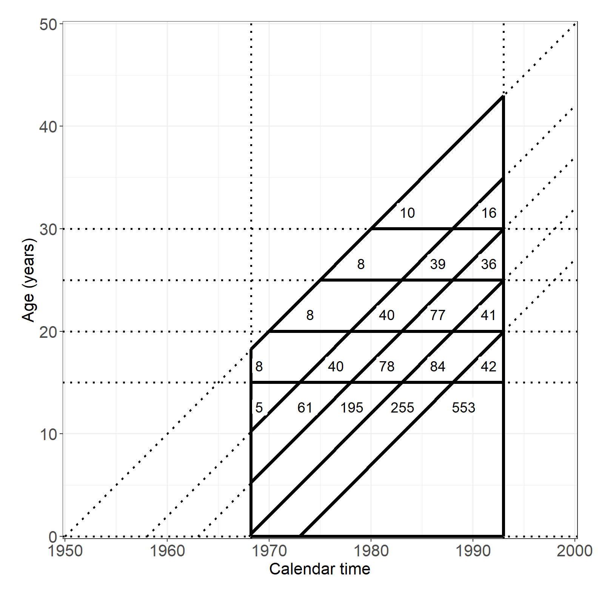
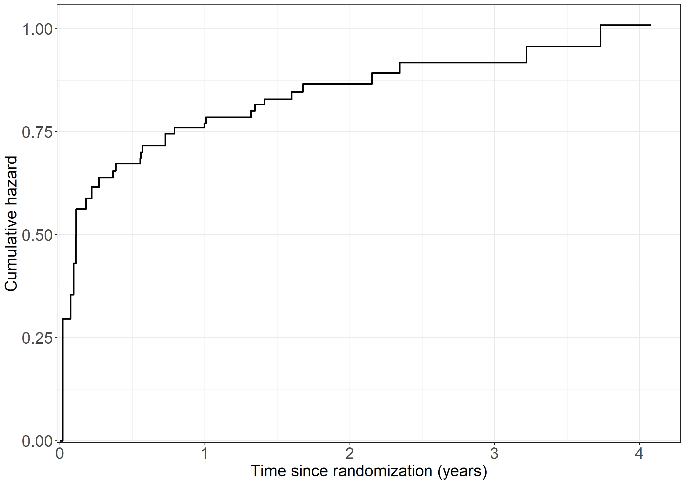
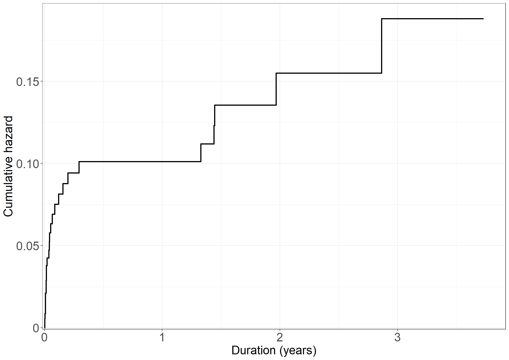
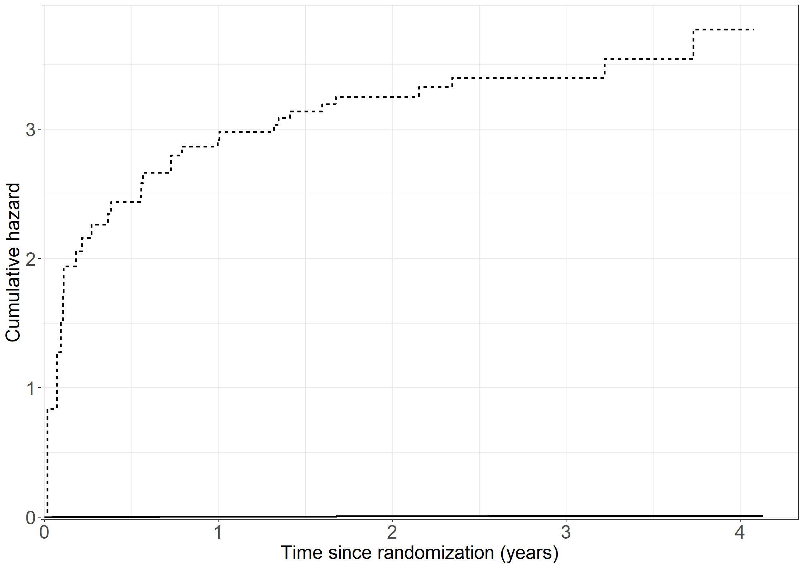
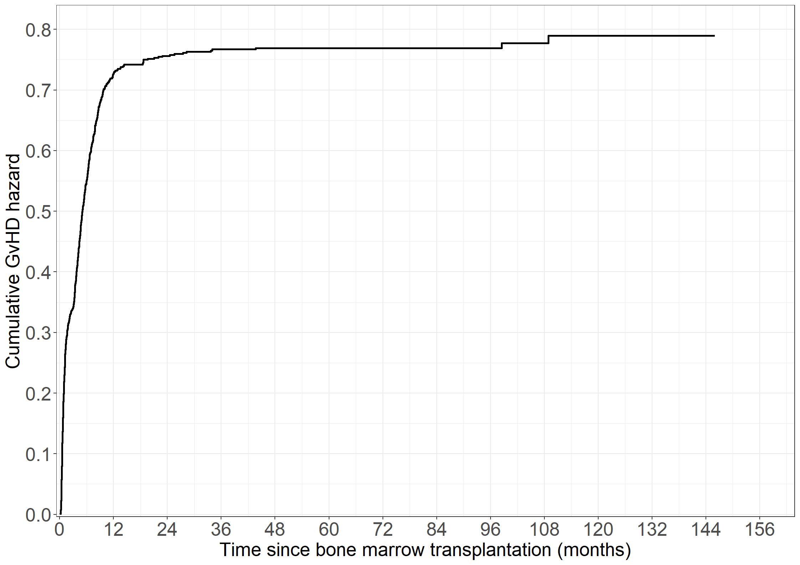
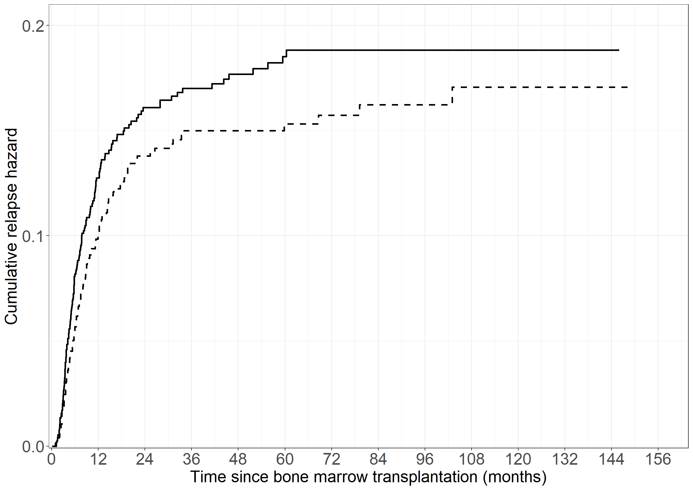
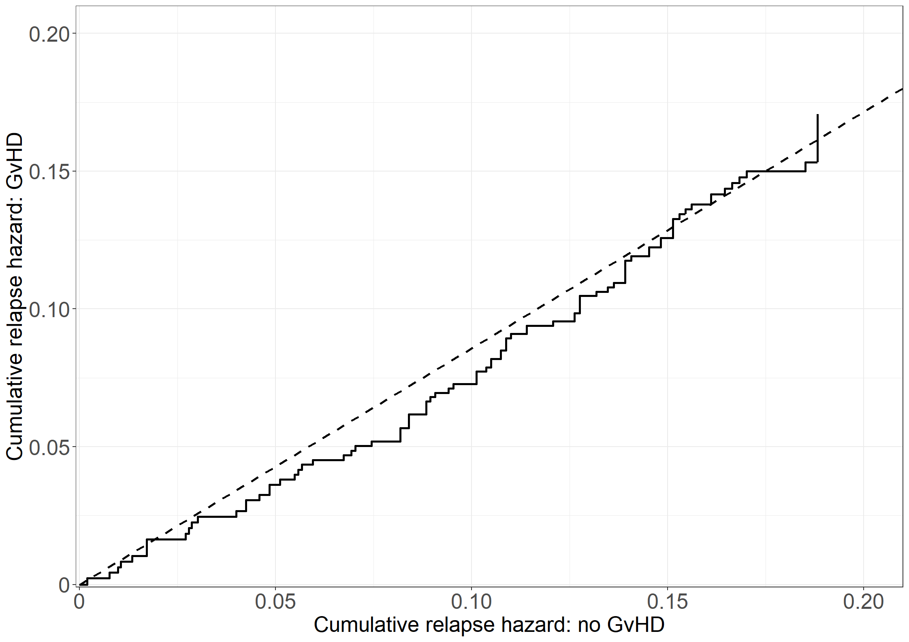
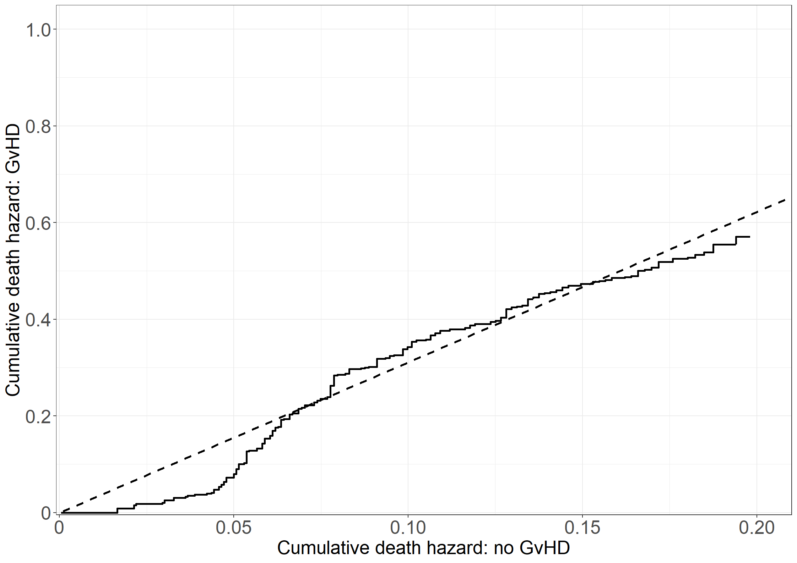
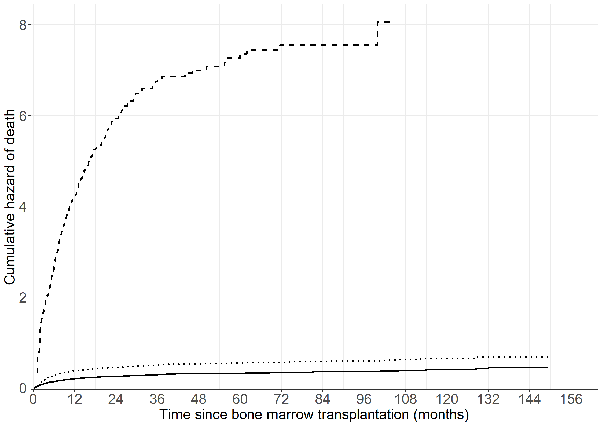
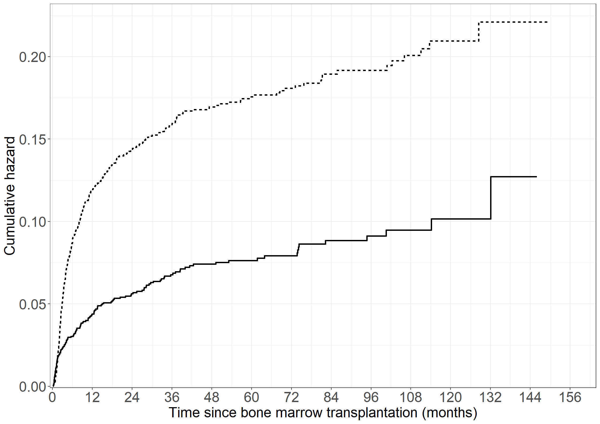

Code show/hide
pbc3 <- data.frame(read.csv("data/pbc3.csv"))
pbc3$log2bili <- with(pbc3, log2(bili))
pbc3$years <- with(pbc3, days/365.25)pbc3 <- data.frame(read.csv("data/pbc3.csv"))
pbc3$log2bili <- with(pbc3, log2(bili))
pbc3$years <- with(pbc3, days/365.25)proc import out=pbc3
datafile="data/pbc3.csv"
dbms=csv replace;
run;
data pbc3;
set pbc3;
log2bili=log2(bili);
run;library(survival)
# Treatment
coxph(Surv(years, status != 0) ~ tment + alb + log2bili + tt(tment),
data = pbc3, tt = function(x,t, ...) (x==1)*t, method = "breslow")Call:
coxph(formula = Surv(years, status != 0) ~ tment + alb + log2bili +
tt(tment), data = pbc3, tt = function(x, t, ...) (x == 1) *
t, method = "breslow")
coef exp(coef) se(coef) z p
tment -0.65937 0.51718 0.40576 -1.625 0.104
alb -0.09136 0.91269 0.02167 -4.216 2.49e-05
log2bili 0.66299 1.94059 0.07478 8.866 < 2e-16
tt(tment) 0.04497 1.04600 0.17811 0.253 0.801
Likelihood ratio test=120.1 on 4 df, p=< 2.2e-16
n= 343, number of events= 88
(6 observations deleted due to missingness)coxph(Surv(years, status != 0) ~ tment + alb + log2bili + tt(tment),
data = pbc3, tt = function(x,t, ...) (x==1)*log(t), method = "breslow")Call:
coxph(formula = Surv(years, status != 0) ~ tment + alb + log2bili +
tt(tment), data = pbc3, tt = function(x, t, ...) (x == 1) *
log(t), method = "breslow")
coef exp(coef) se(coef) z p
tment -0.61330 0.54156 0.24327 -2.521 0.0117
alb -0.09152 0.91254 0.02163 -4.232 2.32e-05
log2bili 0.66214 1.93894 0.07462 8.873 < 2e-16
tt(tment) 0.10834 1.11442 0.25424 0.426 0.6700
Likelihood ratio test=120.2 on 4 df, p=< 2.2e-16
n= 343, number of events= 88
(6 observations deleted due to missingness)coxph(Surv(years, status != 0) ~ tment + alb + log2bili + tt(tment),
data = pbc3, tt = function(x,t, ...) (x==1)*(t>2), method = "breslow")Call:
coxph(formula = Surv(years, status != 0) ~ tment + alb + log2bili +
tt(tment), data = pbc3, tt = function(x, t, ...) (x == 1) *
(t > 2), method = "breslow")
coef exp(coef) se(coef) z p
tment -0.58773 0.55559 0.29228 -2.011 0.0443
alb -0.09104 0.91298 0.02168 -4.199 2.68e-05
log2bili 0.66456 1.94363 0.07466 8.901 < 2e-16
tt(tment) 0.03169 1.03220 0.43384 0.073 0.9418
Likelihood ratio test=120 on 4 df, p=< 2.2e-16
n= 343, number of events= 88
(6 observations deleted due to missingness)# Albumin
coxph(Surv(years, status != 0) ~ tment + alb + log2bili + tt(alb),
data = pbc3, tt = function(x,t, ...) x*t, method = "breslow")Call:
coxph(formula = Surv(years, status != 0) ~ tment + alb + log2bili +
tt(alb), data = pbc3, tt = function(x, t, ...) x * t, method = "breslow")
coef exp(coef) se(coef) z p
tment -0.59080 0.55389 0.22472 -2.629 0.008562
alb -0.13296 0.87550 0.03998 -3.326 0.000882
log2bili 0.66405 1.94265 0.07476 8.882 < 2e-16
tt(alb) 0.02317 1.02344 0.01854 1.250 0.211400
Likelihood ratio test=121.6 on 4 df, p=< 2.2e-16
n= 343, number of events= 88
(6 observations deleted due to missingness)coxph(Surv(years, status != 0) ~ tment + alb + log2bili + tt(alb),
data = pbc3, tt = function(x,t, ...) x*log(t), method = "breslow")Call:
coxph(formula = Surv(years, status != 0) ~ tment + alb + log2bili +
tt(alb), data = pbc3, tt = function(x, t, ...) x * log(t),
method = "breslow")
coef exp(coef) se(coef) z p
tment -0.58958 0.55456 0.22460 -2.625 0.00867
alb -0.10194 0.90308 0.02349 -4.341 1.42e-05
log2bili 0.66488 1.94425 0.07483 8.885 < 2e-16
tt(alb) 0.03347 1.03404 0.02561 1.307 0.19120
Likelihood ratio test=121.8 on 4 df, p=< 2.2e-16
n= 343, number of events= 88
(6 observations deleted due to missingness)coxph(Surv(years, status != 0) ~ tment + alb + log2bili + tt(alb),
data = pbc3, tt = function(x,t, ...) (x)*(t>2), method = "breslow")Call:
coxph(formula = Surv(years, status != 0) ~ tment + alb + log2bili +
tt(alb), data = pbc3, tt = function(x, t, ...) (x) * (t >
2), method = "breslow")
coef exp(coef) se(coef) z p
tment -0.59037 0.55412 0.22472 -2.627 0.00861
alb -0.11369 0.89254 0.02779 -4.091 4.3e-05
log2bili 0.66488 1.94426 0.07470 8.901 < 2e-16
tt(alb) 0.05674 1.05838 0.04330 1.310 0.19005
Likelihood ratio test=121.8 on 4 df, p=< 2.2e-16
n= 343, number of events= 88
(6 observations deleted due to missingness)# Log2 bilirubin
coxph(Surv(years, status != 0) ~ tment + alb + log2bili + tt(log2bili),
data = pbc3, tt = function(x,t, ...) x*t, method = "breslow")Call:
coxph(formula = Surv(years, status != 0) ~ tment + alb + log2bili +
tt(log2bili), data = pbc3, tt = function(x, t, ...) x * t,
method = "breslow")
coef exp(coef) se(coef) z p
tment -0.54631 0.57908 0.22571 -2.420 0.0155
alb -0.09009 0.91385 0.02173 -4.147 3.37e-05
log2bili 0.77736 2.17571 0.13382 5.809 6.28e-09
tt(log2bili) -0.06299 0.93895 0.06181 -1.019 0.3081
Likelihood ratio test=121.1 on 4 df, p=< 2.2e-16
n= 343, number of events= 88
(6 observations deleted due to missingness)coxph(Surv(years, status != 0) ~ tment + alb + log2bili + tt(log2bili),
data = pbc3, tt = function(x,t, ...) x*log(t), method = "breslow")Call:
coxph(formula = Surv(years, status != 0) ~ tment + alb + log2bili +
tt(log2bili), data = pbc3, tt = function(x, t, ...) x * log(t),
method = "breslow")
coef exp(coef) se(coef) z p
tment -0.55398 0.57466 0.22536 -2.458 0.014
alb -0.09050 0.91347 0.02170 -4.170 3.04e-05
log2bili 0.68779 1.98931 0.07968 8.632 < 2e-16
tt(log2bili) -0.07701 0.92588 0.08780 -0.877 0.380
Likelihood ratio test=120.8 on 4 df, p=< 2.2e-16
n= 343, number of events= 88
(6 observations deleted due to missingness)coxph(Surv(years, status != 0) ~ tment + alb + log2bili + tt(log2bili),
data = pbc3, tt = function(x,t, ...) (x)*(t>2), method = "breslow")Call:
coxph(formula = Surv(years, status != 0) ~ tment + alb + log2bili +
tt(log2bili), data = pbc3, tt = function(x, t, ...) (x) *
(t > 2), method = "breslow")
coef exp(coef) se(coef) z p
tment -0.54878 0.57765 0.22521 -2.437 0.0148
alb -0.09045 0.91352 0.02176 -4.157 3.22e-05
log2bili 0.73519 2.08587 0.09487 7.750 9.22e-15
tt(log2bili) -0.18232 0.83334 0.14910 -1.223 0.2214
Likelihood ratio test=121.5 on 4 df, p=< 2.2e-16
n= 343, number of events= 88
(6 observations deleted due to missingness)* Treatment;
proc phreg data=pbc3;
class tment (ref='0');
model days*status(0)=tment alb log2bili tmenttime/rl;
tmenttime=(tment=1)*days;
run;
proc phreg data=pbc3;
class tment (ref='0');
model days*status(0)=tment alb log2bili tmentlogtime/rl;
tmentlogtime=(tment=1)*log(days);
run;
proc phreg data=pbc3;
class tment (ref='0');
model days*status(0)=tment alb log2bili tmentt0/rl;
tmentt0=(tment=1)*(days>2*365.25);
run;
* Log bilirubin;
proc phreg data=pbc3;
class tment (ref='0');
model days*status(0)=tment alb log2bili bilitime/rl;
bilitime=log2bili*days;
run;
proc phreg data=pbc3;
class tment (ref='0');
model days*status(0)=tment alb log2bili bililogtime/rl;
bililogtime=log2bili*log(days);
run;
proc phreg data=pbc3;
class tment (ref='0');
model days*status(0)=tment alb log2bili bilit0/rl;
bilit0=log2bili*(days>2*365.25);
run;
* Albumin;
proc phreg data=pbc3;
class tment (ref='0');
model days*status(0)=tment alb log2bili albtime/rl;
albtime=alb*days;
run;
proc phreg data=pbc3;
class tment (ref='0');
model days*status(0)=tment alb log2bili alblogtime/rl;
alblogtime=alb*log(days);
run;
proc phreg data=pbc3;
class tment (ref='0');
model days*status(0)=tment alb log2bili albt0/rl;
albt0=alb*(days>2*365.25);
run;bissau <- data.frame(read.csv("data/bissau.csv"))
# Variables for age as time scale and dtp binary
bissau$agein <- with(bissau, age/(365.24/12))
bissau$ageout <- with(bissau, agein+fuptime/(365.24/12))
bissau$dtpany <- 1*with(bissau, dtp>0)proc import
datafile="data/bissau.csv" out=bissau
dbms = csv replace;
run;
data bissau;
set bissau;
agein=age/(365.24/12);
ageout=agein+fuptime/(365.24/12);
dtpany=(dtp>0);
run; table(bissau$bcg, bissau$dtp)
0 1 2 3
0 1942 19 9 3
1 1159 1299 582 261100*table(bissau$bcg, bissau$dtp) / rowSums(table(bissau$bcg, bissau$dtp))
0 1 2 3
0 98.4287886 0.9630005 0.4561581 0.1520527
1 35.1105726 39.3517116 17.6310209 7.9066949proc freq data=bissau;
tables bcg*dtp bcg*dtpany/ nocol nopercent;
run;library(survival)
coxph(Surv(agein,ageout,dead!=0)~bcg,data=bissau,method="breslow",timefix=F)Call:
coxph(formula = Surv(agein, ageout, dead != 0) ~ bcg, data = bissau,
method = "breslow", timefix = F)
coef exp(coef) se(coef) z p
bcg -0.3558 0.7006 0.1407 -2.529 0.0114
Likelihood ratio test=6.28 on 1 df, p=0.01218
n= 5274, number of events= 222 coxph(Surv(agein,ageout,dead!=0)~dtpany,data=bissau,method="breslow",timefix=F)Call:
coxph(formula = Surv(agein, ageout, dead != 0) ~ dtpany, data = bissau,
method = "breslow", timefix = F)
coef exp(coef) se(coef) z p
dtpany -0.03855 0.96218 0.14904 -0.259 0.796
Likelihood ratio test=0.07 on 1 df, p=0.7958
n= 5274, number of events= 222 coxph(Surv(agein,ageout,dead!=0)~bcg+dtpany,data=bissau,method="breslow",timefix=F)Call:
coxph(formula = Surv(agein, ageout, dead != 0) ~ bcg + dtpany,
data = bissau, method = "breslow", timefix = F)
coef exp(coef) se(coef) z p
bcg -0.5585 0.5720 0.1924 -2.902 0.0037
dtpany 0.3286 1.3890 0.2021 1.625 0.1041
Likelihood ratio test=9.01 on 2 df, p=0.01106
n= 5274, number of events= 222 coxph(Surv(agein,ageout,dead!=0)~bcg*dtpany,data=bissau,method="breslow",timefix=F)Call:
coxph(formula = Surv(agein, ageout, dead != 0) ~ bcg * dtpany,
data = bissau, method = "breslow", timefix = F)
coef exp(coef) se(coef) z p
bcg -0.5764 0.5619 0.2023 -2.849 0.00439
dtpany 0.1252 1.1334 0.7178 0.174 0.86151
bcg:dtpany 0.2212 1.2475 0.7429 0.298 0.76595
Likelihood ratio test=9.1 on 3 df, p=0.02796
n= 5274, number of events= 222 proc phreg data=bissau;
model ageout*dead(0) = bcg / entry=agein rl;
run;
proc phreg data=bissau;
model ageout*dead(0) = dtpany / entry=agein rl;
run;
proc phreg data=bissau;
model ageout*dead(0) = bcg dtpany / entry=agein rl;
run;
proc phreg data=bissau;
model ageout*dead(0) = bcg dtpany bcg*dtpany / entry=agein rl;
run;testis <- data.frame(read.csv("data/testis.csv"))
# Add extra variables
testis$lpyrs <- log(testis$pyrs)
testis$par2 <- as.numeric(testis$parity < 2)proc import out=testis
datafile="data/testis.csv"
dbms=csv replace;
run;
data testis;
set testis;
lpyrs = log(pyrs);
par2 = (parity>=2);
run;# Data frames
df1 <- data.frame(x1 = 1900 + c(50, 58, 63, 68, 73),
y1 = rep(0, 5),
x2 = rep(2000, 5),
y2 = 100 - c(50, 58, 63, 68, 73))
df2 <- data.frame(x1 = 1968.25 + c(0, 0, 0, 0, 73-68.25),
y1 = c(68.25 - 50, 68.25 - 58, 68.25 - 63, 68.25 - 68, 0),
x2 = rep(1993, 5),
y2 = 100 - c(50, 58, 63, 68, 73) - 7)
df3 <- data.frame(x1 = c(1968.25, 1993, 1968.25, 1968.25, 1968.25 + 1.75, 1968.25 + 6.75, 1968.25 + 11.75),
y1 = c(0, 0, 0, 15, 20, 25, 30),
x2 = c(1968.25, 1993, 1993, 1993, 1993, 1993, 1993),
y2 = c(68.25 - 50, 100 - 57, 0, 15, 20, 25, 30)
)
# For labels
D <- tapply( testis$cases, list( testis$age, testis$cohort ), sum )
Y <- tapply( testis$pyrs, list( testis$age, testis$cohort ), sum )
x <- outer( unique( testis$age )+c(17.5,rep(2.5,4)),
unique( testis$cohort )+2.5,
"+" )
x[1,] <- x[1,]-c(0,3,3,3,2)
y <- outer( c(13,17,22,27,32), rep(1,5), "*" )
label_data <- data.frame(x = x[!is.na(Y)],
y = y[!is.na(Y)],
label = paste( round( Y/10^4 )[!is.na(Y)] )
)
label_data2 <- data.frame(x = 1956, y = 47.5, label = "PY (10,000)")
# Create plot
library(ggplot2)
theme_general <- theme_bw() +
theme(legend.position = "bottom",
text = element_text(size = 16),
axis.text.x = element_text(size = 16),
axis.text.y = element_text(size = 16))
fig3.1 <- ggplot(df1) +
geom_vline(xintercept = c(1968.25, 1993),
size = 1, linetype = "dotted") +
geom_hline(yintercept = c(0, 15, 20, 25, 30),
size = 1, linetype = "dotted") +
geom_segment(aes(x = x1, y = y1,
xend = x2, yend = y2),
data = df1,
size = 1, linetype = "dotted") +
geom_segment(aes(x = x1, y = y1,
xend = x2, yend = y2),
data = df2,
size = 1.5) +
geom_segment(aes(x = x1, y = y1,
xend = x2, yend = y2),
data = df3,
size = 1.5) +
theme_general +
xlab("Calendar time") +
ylab("Age (years)") +
scale_x_continuous(expand = expansion(mult = c(0.005, 0.005)),
limits = c(1950, 2000),
breaks = seq(1950, 2000, 10)) +
scale_y_continuous(expand = expansion(mult = c(0.005, 0.005)),
limits = c(0, 50),
breaks = seq(0, 50, 10)) +
geom_label(aes(x = x, y = y, label = label), size = 5, label.size = NA,
hjust = 1.1, vjust = 0.7,
data = label_data) +
theme(plot.margin=unit(c(0.75, 0.75, 0.75, 0.75), "cm"))
fig3.1
library(broom)
library(lmtest)
# Column 1
options(contrasts=c("contr.treatment", "contr.poly"))
testis$age <- as.factor(testis$age)
testis$age <- relevel(testis$age, ref = '20')
summary(glm(cases ~ offset(lpyrs) + par2 + age, data = testis, family = poisson))
Call:
glm(formula = cases ~ offset(lpyrs) + par2 + age, family = poisson,
data = testis)
Coefficients:
Estimate Std. Error z value Pr(>|z|)
(Intercept) -9.04435 0.08393 -107.757 < 2e-16 ***
par2 0.21663 0.08405 2.577 0.00996 **
age0 -4.03084 0.21105 -19.099 < 2e-16 ***
age15 -1.17094 0.11886 -9.851 < 2e-16 ***
age25 0.55962 0.09802 5.709 1.14e-08 ***
age30 0.75263 0.13272 5.671 1.42e-08 ***
---
Signif. codes: 0 '***' 0.001 '**' 0.01 '*' 0.05 '.' 0.1 ' ' 1
(Dispersion parameter for poisson family taken to be 1)
Null deviance: 1647.61 on 236 degrees of freedom
Residual deviance: 201.07 on 231 degrees of freedom
AIC: 540.84
Number of Fisher Scoring iterations: 5# Column 2
testis$motherage <- as.factor(testis$motherage)
testis$motherage <- relevel(testis$motherage, ref = "30")
testis$cohort <- as.factor(testis$cohort)
testis$cohort <- relevel(testis$cohort, ref = "1973")
summary(poisfull<-glm(cases ~ offset(lpyrs) + par2 + age + motherage + cohort,
data = testis,family = poisson))
Call:
glm(formula = cases ~ offset(lpyrs) + par2 + age + motherage +
cohort, family = poisson, data = testis)
Coefficients:
Estimate Std. Error z value Pr(>|z|)
(Intercept) -9.11684 0.29271 -31.146 < 2e-16 ***
par2 0.22967 0.09112 2.521 0.0117 *
age0 -4.00398 0.23905 -16.749 < 2e-16 ***
age15 -1.16652 0.12522 -9.316 < 2e-16 ***
age25 0.61710 0.10445 5.908 3.46e-09 ***
age30 0.95356 0.15378 6.201 5.62e-10 ***
motherage12 0.02926 0.24121 0.121 0.9034
motherage20 0.05796 0.22233 0.261 0.7943
motherage25 -0.11663 0.22510 -0.518 0.6044
cohort1950 -0.36275 0.28800 -1.260 0.2078
cohort1958 -0.08031 0.24838 -0.323 0.7464
cohort1963 0.12346 0.23712 0.521 0.6026
cohort1968 0.13376 0.23600 0.567 0.5709
---
Signif. codes: 0 '***' 0.001 '**' 0.01 '*' 0.05 '.' 0.1 ' ' 1
(Dispersion parameter for poisson family taken to be 1)
Null deviance: 1647.6 on 236 degrees of freedom
Residual deviance: 190.2 on 224 degrees of freedom
AIC: 543.98
Number of Fisher Scoring iterations: 5tidy(poisfull, exponentiate = TRUE, conf.int = TRUE)# A tibble: 13 × 7
term estimate std.error statistic p.value conf.low conf.high
<chr> <dbl> <dbl> <dbl> <dbl> <dbl> <dbl>
1 (Intercept) 0.000110 0.293 -31.1 5.74e-213 0.0000605 0.000191
2 par2 1.26 0.0911 2.52 1.17e- 2 1.05 1.51
3 age0 0.0182 0.239 -16.7 5.72e- 63 0.0112 0.0286
4 age15 0.311 0.125 -9.32 1.21e- 20 0.243 0.397
5 age25 1.85 0.104 5.91 3.46e- 9 1.51 2.28
6 age30 2.59 0.154 6.20 5.62e- 10 1.91 3.50
7 motherage12 1.03 0.241 0.121 9.03e- 1 0.652 1.68
8 motherage20 1.06 0.222 0.261 7.94e- 1 0.698 1.68
9 motherage25 0.890 0.225 -0.518 6.04e- 1 0.583 1.41
10 cohort1950 0.696 0.288 -1.26 2.08e- 1 0.398 1.23
11 cohort1958 0.923 0.248 -0.323 7.46e- 1 0.574 1.52
12 cohort1963 1.13 0.237 0.521 6.03e- 1 0.720 1.83
13 cohort1968 1.14 0.236 0.567 5.71e- 1 0.729 1.84 # LRT for mother's age
poismage<-glm(cases ~ offset(lpyrs) + par2 + age + cohort,
data = testis,family = poisson)
lrtest(poisfull,poismage)Likelihood ratio test
Model 1: cases ~ offset(lpyrs) + par2 + age + motherage + cohort
Model 2: cases ~ offset(lpyrs) + par2 + age + cohort
#Df LogLik Df Chisq Pr(>Chisq)
1 13 -258.99
2 10 -260.25 -3 2.5336 0.4692# LRT for birth cohort of son
poiscohort<-glm(cases ~ offset(lpyrs) + par2 + age + motherage,
data = testis,family = poisson)
lrtest(poisfull,poiscohort)Likelihood ratio test
Model 1: cases ~ offset(lpyrs) + par2 + age + motherage + cohort
Model 2: cases ~ offset(lpyrs) + par2 + age + motherage
#Df LogLik Df Chisq Pr(>Chisq)
1 13 -258.99
2 9 -263.60 -4 9.2204 0.05582 .
---
Signif. codes: 0 '***' 0.001 '**' 0.01 '*' 0.05 '.' 0.1 ' ' 1# LRT parity and age
poisinteract<-glm(cases ~ offset(lpyrs) + par2 + age + motherage + cohort + par2*age,
data = testis, family = poisson)
lrtest(poisfull,poisinteract)Likelihood ratio test
Model 1: cases ~ offset(lpyrs) + par2 + age + motherage + cohort
Model 2: cases ~ offset(lpyrs) + par2 + age + motherage + cohort + par2 *
age
#Df LogLik Df Chisq Pr(>Chisq)
1 13 -258.99
2 17 -255.11 4 7.7606 0.1008# HR for seminomas
tidy(glm(semi ~ offset(lpyrs) + par2 + age + motherage + cohort,
data = testis, family = poisson),
exponentiate = T, conf.int = T)# A tibble: 13 × 7
term estimate std.error statistic p.value conf.low conf.high
<chr> <dbl> <dbl> <dbl> <dbl> <dbl> <dbl>
1 (Intercept) 0.0000297 1.00 -10.4 1.98e-25 0.00000314 0.000178
2 par2 1.23 0.171 1.23 2.19e- 1 0.886 1.73
3 age0 0.00297 1.13 -5.17 2.38e- 7 0.000147 0.0176
4 age15 0.0949 0.443 -5.32 1.03e- 7 0.0357 0.209
5 age25 2.98 0.200 5.47 4.55e- 8 2.03 4.44
6 age30 6.62 0.245 7.71 1.30e-14 4.11 10.8
7 motherage12 0.900 0.640 -0.164 8.69e- 1 0.295 3.94
8 motherage20 0.978 0.618 -0.0360 9.71e- 1 0.339 4.15
9 motherage25 1.23 0.617 0.338 7.35e- 1 0.427 5.22
10 cohort1950 0.731 0.907 -0.345 7.30e- 1 0.140 5.71
11 cohort1958 0.966 0.879 -0.0389 9.69e- 1 0.198 7.26
12 cohort1963 0.862 0.869 -0.171 8.64e- 1 0.180 6.39
13 cohort1968 0.691 0.879 -0.421 6.74e- 1 0.140 5.18 # HR for non-seminomas
tidy(glm(nonsemi ~ offset(lpyrs) + par2 + age + motherage + cohort,
data = testis, family = poisson),
exponentiate = T, conf.int = T)# A tibble: 13 × 7
term estimate std.error statistic p.value conf.low conf.high
<chr> <dbl> <dbl> <dbl> <dbl> <dbl> <dbl>
1 (Intercept) 0.0000860 0.308 -30.4 7.09e-203 0.0000459 0.000154
2 par2 1.27 0.108 2.19 2.88e- 2 1.03 1.56
3 age0 0.0223 0.246 -15.4 9.35e- 54 0.0135 0.0355
4 age15 0.369 0.133 -7.48 7.32e- 14 0.283 0.478
5 age25 1.49 0.125 3.21 1.35e- 3 1.17 1.91
6 age30 1.21 0.229 0.846 3.97e- 1 0.762 1.88
7 motherage12 1.09 0.264 0.341 7.33e- 1 0.662 1.87
8 motherage20 1.10 0.239 0.382 7.03e- 1 0.700 1.79
9 motherage25 0.804 0.244 -0.892 3.72e- 1 0.508 1.33
10 cohort1950 0.639 0.328 -1.37 1.72e- 1 0.335 1.22
11 cohort1958 0.828 0.264 -0.718 4.73e- 1 0.499 1.41
12 cohort1963 1.15 0.247 0.550 5.82e- 1 0.715 1.89
13 cohort1968 1.19 0.245 0.722 4.70e- 1 0.748 1.96 * Column 1;
proc genmod;
class age (ref='20') par2 (ref='1');
model cases=par2 age/dist=poi offset=lpyrs type3;
estimate 'RR' par2 1 -1/exp;
run;
* Column 2;
proc genmod;
class age (ref='20') motherage(ref='30') cohort(ref='1973') par2 (ref='1');
model cases=par2 age motherage cohort/dist=poi offset=lpyrs type3;
estimate 'RR' par2 1 -1/exp;
run;
* In-text interaction test;
proc genmod;
class age (ref='20') motherage(ref='30') cohort(ref='1973') par2 (ref='1');
model cases=par2 age motherage cohort par2*age/dist=poi offset=lpyrs type3;
run;
* seminomas;
proc genmod;
class age (ref='20') motherage(ref='30') cohort(ref='1973') par2 (ref='1');
model semi=par2 age motherage cohort/dist=poi offset=lpyrs type3;
estimate 'RR' par2 1 -1/exp;
run;
* non-seminomas;
proc genmod;
class age (ref='20') motherage(ref='30') cohort(ref='1973') par2 (ref='1');
model nonsemi=par2 age motherage cohort/dist=poi offset=lpyrs type3;
estimate 'RR' par2 1 -1/exp;
run;prova <- data.frame(read.csv("data/prova.csv", na.strings = c(".")))
# Treatment 2x2 factorial
prova$beh <- with(prova, as.factor(scle + beta*2))
# Extra variables
provany <- prova
provany$log2bili <- with(provany, log2(bili))
provany$btime <- ifelse(provany$bleed == 1, provany$timebleed, provany$timedeath)
provany$d0time <- ifelse(provany$bleed == 1, provany$timebleed, provany$timedeath)
provany$dead0 <- ifelse(provany$bleed == 1, 0, provany$death)
provany$outof0 <- ifelse(provany$bleed == 1, 1, provany$death)
provany$bdtime <- ifelse(provany$bleed == 1, provany$timedeath, NA)
provany$deadb <- ifelse(provany$bleed == 1, provany$death, NA)
provany$wait <- ifelse(provany$bleed == 1, provany$bdtime - provany$timebleed, NA)proc import out=prova
datafile="data/prova.csv"
dbms=csv replace;
run;
data prova;
set prova;
beh = scle + beta*2;
log2bili = log2(bili);
if bleed = 1 then wait = timedeath - timebleed;
run;
data provany;
set prova;
if bleed=1 then do; btime=timebleed; d0time=timebleed; dead0=0; outof0=1;
bdtime=timedeath; deadb=death; wait=bdtime-timebleed;
end;
if bleed=0 then do; btime=timedeath; d0time=timedeath; dead0=death; outof0=death;
bdtime=.; deadb=.; wait=.; end;
log2bili=log2(bili);
run;library(survival)
options(contrasts=c("contr.treatment", "contr.poly"))
## Column 1
# Variceal bleeding
coxph(Surv(btime, bleed) ~ beh, data = provany, ties = "breslow")Call:
coxph(formula = Surv(btime, bleed) ~ beh, data = provany, ties = "breslow")
coef exp(coef) se(coef) z p
beh1 0.05563 1.05721 0.39235 0.142 0.887
beh2 -0.03972 0.96106 0.40039 -0.099 0.921
beh3 -0.03205 0.96846 0.40063 -0.080 0.936
Likelihood ratio test=0.07 on 3 df, p=0.9951
n= 286, number of events= 50 # logrank test: Variceal bleeding
lr<-survdiff(Surv(btime, bleed) ~ beh, data = provany)
c(lr$chisq,lr$pvalue)[1] 0.07114524 0.99505932# Death without bleeding
cox1<-coxph(Surv(d0time, dead0) ~ beh, data = provany, ties = "breslow")
# logrank test: Death without bleeding
lr<-survdiff(Surv(d0time, dead0) ~ beh, data = provany)
c(lr$chisq,lr$pvalue)[1] 12.856428541 0.004957601# Death without bleeding - additive model
cox2<-coxph(Surv(d0time, dead0) ~ scle + beta, data = provany, ties = "breslow")
library(lmtest)
# Death without bleeding - remove propranolol
lrtest(cox2,cox1)Likelihood ratio test
Model 1: Surv(d0time, dead0) ~ scle + beta
Model 2: Surv(d0time, dead0) ~ beh
#Df LogLik Df Chisq Pr(>Chisq)
1 2 -234.19
2 3 -233.38 1 1.627 0.2021cox3<-coxph(Surv(d0time, dead0) ~ scle, data = provany, ties = "breslow")
lrtest(cox3,cox2)Likelihood ratio test
Model 1: Surv(d0time, dead0) ~ scle
Model 2: Surv(d0time, dead0) ~ scle + beta
#Df LogLik Df Chisq Pr(>Chisq)
1 1 -234.36
2 2 -234.19 1 0.348 0.5553cox3Call:
coxph(formula = Surv(d0time, dead0) ~ scle, data = provany, ties = "breslow")
coef exp(coef) se(coef) z p
scle 1.0180 2.7677 0.3281 3.103 0.00191
Likelihood ratio test=10.76 on 1 df, p=0.001037
n= 286, number of events= 46 ## Column 2
# Variceal bleeding
coxph(Surv(btime, bleed) ~ beh + sex + coag + log2bili + factor(varsize),
data = provany, ties = "breslow")Call:
coxph(formula = Surv(btime, bleed) ~ beh + sex + coag + log2bili +
factor(varsize), data = provany, ties = "breslow")
coef exp(coef) se(coef) z p
beh1 0.176844 1.193445 0.433336 0.408 0.68320
beh2 0.207005 1.229989 0.424001 0.488 0.62539
beh3 0.030562 1.031034 0.420784 0.073 0.94210
sex -0.025865 0.974467 0.329095 -0.079 0.93736
coag -0.020647 0.979565 0.007819 -2.641 0.00827
log2bili 0.191011 1.210473 0.149142 1.281 0.20029
factor(varsize)2 0.741460 2.098998 0.414959 1.787 0.07397
factor(varsize)3 1.884681 6.584252 0.442325 4.261 2.04e-05
Likelihood ratio test=37.67 on 8 df, p=8.654e-06
n= 271, number of events= 47
(15 observations deleted due to missingness)# Death without bleeding
coxph(Surv(d0time, dead0) ~ beh + sex + coag + log2bili + factor(varsize),
data = provany, ties = "breslow")Call:
coxph(formula = Surv(d0time, dead0) ~ beh + sex + coag + log2bili +
factor(varsize), data = provany, ties = "breslow")
coef exp(coef) se(coef) z p
beh1 0.826468 2.285233 0.458574 1.802 0.07151
beh2 -0.159630 0.852459 0.575047 -0.278 0.78132
beh3 0.910385 2.485279 0.420391 2.166 0.03034
sex 0.841579 2.320027 0.415722 2.024 0.04293
coag -0.008112 0.991920 0.006804 -1.192 0.23312
log2bili 0.445359 1.561051 0.136749 3.257 0.00113
factor(varsize)2 0.221738 1.248245 0.347159 0.639 0.52300
factor(varsize)3 0.753294 2.123984 0.448544 1.679 0.09307
Likelihood ratio test=42.13 on 8 df, p=1.283e-06
n= 271, number of events= 46
(15 observations deleted due to missingness)* Table 3.3 column 1;
* Variceal bleeding;
* logrank test is the score test;
proc phreg data=provany;
class beh (ref='0');
model btime*bleed(0)=beh / type3(lr);
run;
* Death without bleeding;
* logrank test is the score test;
proc phreg data=provany;
class beh (ref='0');
model d0time*dead0(0)=beh / type3(lr);
run;
* Death without bleeding - in text LRT for additive model;
proc phreg data=provany;
model d0time*dead0(0)=scle|beta / type3(lr);
estimate 'both' scle 1 beta 1 scle*beta 1;
run;
proc phreg data=provany;
model d0time*dead0(0)=scle beta / type3(lr);
run;
* Death without bleeding - remove propranolol;
proc phreg data=provany;
model d0time*dead0(0)=scle / type3(lr);
run;
* Table 3.3 column 2;
* Variceal bleeding;
proc phreg data=provany;
class beh (ref='0') varsize (ref='1');
model btime*bleed(0)=beh sex coag log2bili varsize / type3(lr);
run;
* Death without bleeding;
proc phreg data=provany;
class beh (ref='0') varsize (ref='1');
model d0time*dead0(0)=beh sex coag log2bili varsize / type3(lr);
run;# Composite
cox<-coxph(Surv(btime, outof0) ~ beh + sex + coag + log2bili + factor(varsize),
data = provany, ties = "breslow")
coxCall:
coxph(formula = Surv(btime, outof0) ~ beh + sex + coag + log2bili +
factor(varsize), data = provany, ties = "breslow")
coef exp(coef) se(coef) z p
beh1 0.525145 1.690704 0.312502 1.680 0.09287
beh2 0.100189 1.105380 0.337918 0.296 0.76686
beh3 0.494807 1.640181 0.291638 1.697 0.08976
sex 0.360259 1.433701 0.253379 1.422 0.15508
coag -0.013600 0.986492 0.005287 -2.572 0.01010
log2bili 0.328376 1.388711 0.101761 3.227 0.00125
factor(varsize)2 0.446403 1.562681 0.263275 1.696 0.08997
factor(varsize)3 1.332535 3.790639 0.301391 4.421 9.81e-06
Likelihood ratio test=65.71 on 8 df, p=3.489e-11
n= 271, number of events= 93
(15 observations deleted due to missingness)# LRT for treatment
coxreduced<-coxph(Surv(btime, outof0) ~ sex + coag + log2bili + factor(varsize),
data = provany, ties = "breslow")
lrtest(coxreduced,cox)Likelihood ratio test
Model 1: Surv(btime, outof0) ~ sex + coag + log2bili + factor(varsize)
Model 2: Surv(btime, outof0) ~ beh + sex + coag + log2bili + factor(varsize)
#Df LogLik Df Chisq Pr(>Chisq)
1 5 -457.74
2 8 -455.35 3 4.7717 0.1893proc phreg data=provany;
class beh (ref='0') varsize (ref='1');
model btime*outof0(0)=beh sex coag log2bili varsize / type3(lr);
run;# Time since randomization (tsr)
# Column 1
coxtsr<-coxph(Surv(btime, bdtime, deadb != 0) ~ beh + sex + log2bili,
data = provany, ties = "breslow")
coxtsrCall:
coxph(formula = Surv(btime, bdtime, deadb != 0) ~ beh + sex +
log2bili, data = provany, ties = "breslow")
coef exp(coef) se(coef) z p
beh1 -1.4127 0.2435 0.6787 -2.081 0.0374
beh2 -0.1146 0.8918 0.5952 -0.192 0.8474
beh3 0.7327 2.0807 0.5439 1.347 0.1780
sex 1.1389 3.1234 0.5039 2.260 0.0238
log2bili 0.1088 1.1149 0.2075 0.524 0.6001
Likelihood ratio test=15.35 on 5 df, p=0.008958
n= 48, number of events= 27
(238 observations deleted due to missingness)coxtsr0<-coxph(Surv(btime, bdtime, deadb != 0) ~ sex + log2bili,
data = provany, ties = "breslow")
coxtsr0Call:
coxph(formula = Surv(btime, bdtime, deadb != 0) ~ sex + log2bili,
data = provany, ties = "breslow")
coef exp(coef) se(coef) z p
sex 0.9095 2.4830 0.4807 1.892 0.0585
log2bili -0.1618 0.8506 0.1826 -0.886 0.3758
Likelihood ratio test=4.19 on 2 df, p=0.1232
n= 48, number of events= 27
(238 observations deleted due to missingness)# LRT for beh
library(lmtest)
lrtest(coxtsr,coxtsr0)Likelihood ratio test
Model 1: Surv(btime, bdtime, deadb != 0) ~ beh + sex + log2bili
Model 2: Surv(btime, bdtime, deadb != 0) ~ sex + log2bili
#Df LogLik Df Chisq Pr(>Chisq)
1 5 -59.626
2 2 -65.208 -3 11.164 0.01087 *
---
Signif. codes: 0 '***' 0.001 '**' 0.01 '*' 0.05 '.' 0.1 ' ' 1coxnoint<-coxph(Surv(btime, bdtime, deadb != 0) ~ scle + beta + sex + log2bili,
data = provany, ties = "breslow")
# LRT interaction
lrtest(coxnoint,coxtsr)Likelihood ratio test
Model 1: Surv(btime, bdtime, deadb != 0) ~ scle + beta + sex + log2bili
Model 2: Surv(btime, bdtime, deadb != 0) ~ beh + sex + log2bili
#Df LogLik Df Chisq Pr(>Chisq)
1 4 -63.061
2 5 -59.626 1 6.8707 0.008762 **
---
Signif. codes: 0 '***' 0.001 '**' 0.01 '*' 0.05 '.' 0.1 ' ' 1# Column 2
provany$tsb<-provany$btime
coxtsr_tt<-coxph(Surv(btime, bdtime, deadb != 0) ~ beh + sex + log2bili+tt(tsb),
data = provany, ties = "breslow",
tt=function(x, t, ...) {
dt <- t-x
cbind(dt1=1*(dt<5), dt2=1*(dt>=5 & dt<10))
})
coxtsr_ttCall:
coxph(formula = Surv(btime, bdtime, deadb != 0) ~ beh + sex +
log2bili + tt(tsb), data = provany, ties = "breslow", tt = function(x,
t, ...) {
dt <- t - x
cbind(dt1 = 1 * (dt < 5), dt2 = 1 * (dt >= 5 & dt < 10))
})
coef exp(coef) se(coef) z p
beh1 -1.15606 0.31472 0.68428 -1.689 0.09113
beh2 -0.02371 0.97657 0.63136 -0.038 0.97005
beh3 0.42544 1.53026 0.61129 0.696 0.48645
sex 1.11875 3.06103 0.53261 2.101 0.03568
log2bili -0.04822 0.95292 0.22285 -0.216 0.82869
tt(tsb)dt1 2.94285 18.96981 0.73891 3.983 6.81e-05
tt(tsb)dt2 2.34525 10.43583 0.80285 2.921 0.00349
Likelihood ratio test=33.65 on 7 df, p=2.005e-05
n= 48, number of events= 27
(238 observations deleted due to missingness)# LRT for time-dependent covariates
lrtest(coxtsr_tt,coxtsr)Likelihood ratio test
Model 1: Surv(btime, bdtime, deadb != 0) ~ beh + sex + log2bili + tt(tsb)
Model 2: Surv(btime, bdtime, deadb != 0) ~ beh + sex + log2bili
#Df LogLik Df Chisq Pr(>Chisq)
1 7 -50.478
2 5 -59.626 -2 18.295 0.0001065 ***
---
Signif. codes: 0 '***' 0.001 '**' 0.01 '*' 0.05 '.' 0.1 ' ' 1# LRT for beh
coxtsr_tt_reduced<-coxph(Surv(btime, bdtime, deadb != 0) ~ sex + log2bili+tt(tsb),
data = provany, ties = "breslow",
tt=function(x, t, ...) {
dt <- t-x
cbind(dt1=1*(dt<5), dt2=1*(dt>=5 & dt<10))
})
lrtest(coxtsr_tt_reduced,coxtsr_tt)Likelihood ratio test
Model 1: Surv(btime, bdtime, deadb != 0) ~ sex + log2bili + tt(tsb)
Model 2: Surv(btime, bdtime, deadb != 0) ~ beh + sex + log2bili + tt(tsb)
#Df LogLik Df Chisq Pr(>Chisq)
1 4 -53.081
2 7 -50.478 3 5.2064 0.1573# In text, model linear effect of time-dependent covariate
coxph(Surv(btime, bdtime, deadb != 0) ~ beh+sex + log2bili+tt(tsb),
data = provany, ties = "breslow",
tt=function(x, t, ...){t-x})Call:
coxph(formula = Surv(btime, bdtime, deadb != 0) ~ beh + sex +
log2bili + tt(tsb), data = provany, ties = "breslow", tt = function(x,
t, ...) {
t - x
})
coef exp(coef) se(coef) z p
beh1 -1.462260 0.231712 0.685283 -2.134 0.03286
beh2 -0.028375 0.972024 0.620246 -0.046 0.96351
beh3 0.599364 1.820960 0.574135 1.044 0.29651
sex 0.899664 2.458776 0.530853 1.695 0.09012
log2bili 0.349775 1.418749 0.224830 1.556 0.11977
tt(tsb) -0.005179 0.994834 0.001769 -2.927 0.00342
Likelihood ratio test=25.54 on 6 df, p=0.0002708
n= 48, number of events= 27
(238 observations deleted due to missingness)# Duration
# Column 1
coxdur<-coxph(Surv(wait, deadb != 0) ~ beh + sex + log2bili,
data = provany, ties = "breslow")
coxdurCall:
coxph(formula = Surv(wait, deadb != 0) ~ beh + sex + log2bili,
data = provany, ties = "breslow")
coef exp(coef) se(coef) z p
beh1 -0.9971 0.3689 0.6429 -1.551 0.121
beh2 -0.2995 0.7412 0.5965 -0.502 0.616
beh3 0.8708 2.3889 0.5136 1.695 0.090
sex 0.6497 1.9149 0.5264 1.234 0.217
log2bili 0.2677 1.3070 0.1790 1.496 0.135
Likelihood ratio test=13.24 on 5 df, p=0.0212
n= 48, number of events= 27
(238 observations deleted due to missingness)coxdur0<-coxph(Surv(wait, deadb != 0) ~ sex + log2bili,
data = provany, ties = "breslow")
coxdur0Call:
coxph(formula = Surv(wait, deadb != 0) ~ sex + log2bili, data = provany,
ties = "breslow")
coef exp(coef) se(coef) z p
sex 0.6742 1.9625 0.4662 1.446 0.148
log2bili 0.1210 1.1286 0.1677 0.721 0.471
Likelihood ratio test=3.03 on 2 df, p=0.2195
n= 48, number of events= 27
(238 observations deleted due to missingness)# LRT for beh
lrtest(coxdur,coxdur0)Likelihood ratio test
Model 1: Surv(wait, deadb != 0) ~ beh + sex + log2bili
Model 2: Surv(wait, deadb != 0) ~ sex + log2bili
#Df LogLik Df Chisq Pr(>Chisq)
1 5 -86.494
2 2 -91.600 -3 10.211 0.01685 *
---
Signif. codes: 0 '***' 0.001 '**' 0.01 '*' 0.05 '.' 0.1 ' ' 1# Column 2
provany$tsr<-provany$btime
coxdur_tt<-coxph(Surv(wait, deadb != 0) ~ beh + sex + log2bili+tt(tsr),
data = provany, ties = "breslow",
tt=function(x, t, ...) {
dt <- x+t
cbind(v1=1*(dt<1*365.25), v2=1*(dt>=1*365.25 & dt<2*365.25))
})
coxdur_ttCall:
coxph(formula = Surv(wait, deadb != 0) ~ beh + sex + log2bili +
tt(tsr), data = provany, ties = "breslow", tt = function(x,
t, ...) {
dt <- x + t
cbind(v1 = 1 * (dt < 1 * 365.25), v2 = 1 * (dt >= 1 * 365.25 &
dt < 2 * 365.25))
})
coef exp(coef) se(coef) z p
beh1 -1.0192 0.3609 0.6502 -1.567 0.117
beh2 -0.3116 0.7323 0.6005 -0.519 0.604
beh3 0.8467 2.3320 0.5244 1.615 0.106
sex 0.6441 1.9043 0.5303 1.215 0.225
log2bili 0.2829 1.3269 0.1966 1.439 0.150
tt(tsr)v1 -0.1723 0.8417 0.9096 -0.189 0.850
tt(tsr)v2 -0.2211 0.8016 0.8862 -0.250 0.803
Likelihood ratio test=13.31 on 7 df, p=0.065
n= 48, number of events= 27
(238 observations deleted due to missingness)# LRT for time-dependent covariates
lrtest(coxdur,coxdur_tt)Likelihood ratio test
Model 1: Surv(wait, deadb != 0) ~ beh + sex + log2bili
Model 2: Surv(wait, deadb != 0) ~ beh + sex + log2bili + tt(tsr)
#Df LogLik Df Chisq Pr(>Chisq)
1 5 -86.494
2 7 -86.464 2 0.0618 0.9696coxdur_tt_reduced<-coxph(Surv(btime, bdtime, deadb != 0) ~ sex + log2bili+tt(tsb),
data = provany, ties = "breslow",
tt=function(x, t, ...) {
dt <- t-x
cbind(dt1=1*(dt<5), dt2=1*(dt>=5 & dt<10))
})* Time since randomisation;
* Column 1;
proc phreg data=provany atrisk;
class beh (ref='0');
model bdtime*deadb(0)=beh sex log2bili / entry=btime rl type3(lr);
run;
* LRT interaction scle*beta;
proc phreg data=provany atrisk;
class beh (ref='0');
model bdtime*deadb(0)=scle|beta sex log2bili / entry=btime rl type3(lr);
run;
* Column 2;
proc phreg data=provany;
class beh (ref='0');
model bdtime*deadb(0)=beh sex log2bili wait1 wait2 / entry=btime rl type3(lr);
wait1=0; wait2=0;
if (bdtime-btime<5) then wait1=1;
if (5<=bdtime-btime<10) then wait2=1;
duration: test wait1=0, wait2=0;
run;
* In text: Linear effect of time-dependent covariate;
proc phreg data=provany;
class beh (ref='0');
model bdtime*deadb(0)=beh sex log2bili lin / entry=btime rl type3(lr);
lin=bdtime-btime;
run;
* Duration;
* Column 1;
proc phreg data=provany;
class beh (ref='0');
model wait*deadb(0)=beh sex log2bili / type3(lr);
baseline out=cumhazwait cumhaz=breslowwait covariates=covar;
run;
* Column 2;
proc phreg data=provany;
class beh (ref='0');
model wait*deadb(0)=beh sex log2bili time1 time2 / type3(lr);
time1=0; time2=0;
if (btime+wait<365.25) then time1=1;
if (365.25<=btime+wait<2*365.25) then time2=1;
timeeff: test time1=0, time2=0;
run;# Plotting style
library(ggplot2)
library(tidyverse)
theme_general <- theme_bw() +
theme(legend.position = "bottom",
text = element_text(size = 20),
axis.text.x = element_text(size = 20),
axis.text.y = element_text(size = 20))
# Make zeros print as "0" always for plot axes
library(stringr)
prettyZero <- function(l){
max.decimals = max(nchar(str_extract(l, "\\.[0-9]+")), na.rm = T)-1
lnew = formatC(l, replace.zero = T, zero.print = "0",
digits = max.decimals, format = "f", preserve.width=T)
return(lnew)
}
# Extract cumulative baseline hazard
coxcumhaz <- survfit(coxtsr,
newdata = data.frame(sex = 0,
beh = "0",
log2bili = 0))
# Collect data for plot
coxdata <- data.frame(cumhaz = append(0,coxcumhaz$cumhaz),
time = append(0,coxcumhaz$time),
type = rep("Breslow estimate", 1+length(coxcumhaz$time)))
# Create Figure 3.2
fig3.2 <- ggplot(aes(x = time / 365.25, y = cumhaz), data = coxdata) +
geom_step(linewidth = 1) +
xlab("Time since randomization (years)") +
ylab("Cumulative hazard") +
scale_x_continuous(expand = expansion(mult = c(0.005, 0.05))) +
scale_y_continuous(expand = expansion(mult = c(0.005, 0.05))) +
theme_general
fig3.2
data covar;
input beh sex log2bili;
datalines;
0 0 0
;
run;
proc phreg data=provany atrisk;
class beh (ref='0');
model bdtime*deadb(0)=beh sex log2bili/entry=btime rl type3(lr);
baseline out=cumhaztime cumhaz=breslowtime covariates=covar;
run;
data cumhaztime;
set cumhaztime;
bdtimeyears = bdtime / 365.25;
run;
proc gplot data=cumhaztime;
plot breslowtime*bdtimeyears/haxis=axis1 vaxis=axis2;
axis1 order=0 to 4 by 1 minor=none
label=('Time since randomization (Years)');
axis2 order=0 to 1.1 by 0.1 minor=none label=(a=90 'Cumulative hazard');
symbol1 v=none i=stepjl c=blue;
run;
quit;# Extract cumulative baseline hazard
coxcumhaz <- survfit(coxdur,
newdata = data.frame(sex = 0,
beh = "0",
log2bili = 0))
# Collect data for plot
coxdata <- data.frame(cumhaz = append(0,coxcumhaz$cumhaz),
time = append(0,coxcumhaz$time),
type = rep("Breslow estimate", 1+length(coxcumhaz$time)))
# Create Figure 3.3
fig3.3 <- ggplot(aes(x = time / 365.25, y = cumhaz), data = coxdata) +
geom_step(linewidth = 1) +
xlab("Duration (years)") +
ylab("Cumulative hazard") +
scale_x_continuous(expand = expansion(mult = c(0.005, 0.05)), ) +
scale_y_continuous(expand = expansion(mult = c(0.005, 0.05)),labels = prettyZero) +
theme_general
fig3.3
* Duration;
data covar;
input beh sex log2bili;
datalines;
0 0 0
;
run;
proc phreg data=provany;
class beh (ref='0');
model wait*deadb(0)=beh sex log2bili / type3(lr);
baseline out=cumhazwait cumhaz=breslowwait covariates=covar;
run;
data cumhazwait;
set cumhazwait;
waityears = wait / 365.25;
run;
proc gplot data=cumhazwait;
plot breslowwait*waityears/haxis=axis1 vaxis=axis2;
axis1 order=0 to 4 by 1 minor=none label=('Duration (Years)');
axis2 order=0 to 0.2 by 0.05 minor=none label=(a=90 'Cumulative hazard');
symbol1 v=none i=stepjl c=blue;
run;
quit;# All bleeds
provasplit11 <- subset(provany, bleed == 1)
# Split by duration
provasplit1 <- survSplit(Surv(wait, deadb != 0) ~ ., data = provasplit11,
cut = c(5, 10),
episode = "wint")
provasplit1$start <- with(provasplit1,
btime + ifelse(wint == 1, 0, ifelse(wint == 2, 5 , 10))
)
provasplit1$stop <- with(provasplit1, btime + wait)
provasplit1$risktime <- with(provasplit1, wait - tstart)
provasplit1$logrisktime <- log(provasplit1$risktime)
provasplit1$fail <- provasplit1$event
# Split by time since rand (t)
provasplit2 <- survSplit(Surv(start, stop, fail) ~ ., data = provasplit1,
cut = c((1) * 365.25, (2) * 365.25),
episode = "tint")
provasplit2$risktime2 <- with(provasplit2, stop - start)
provasplit2$risktimeys2 <- provasplit2$risktime2 / 365.25
provasplit2$logrisktime2 <- log(provasplit2$risktime2)
provasplit2$fail2 <- provasplit2$fail
# Summarize the data, Table 3.9 output
aggregate(cbind(fail2, risktimeys2) ~ tint + wint, provasplit2,
FUN = function(x) c(count = length(x),
sum = sum(x))) tint wint fail2.count fail2.sum risktimeys2.count risktimeys2.sum
1 1 1 39 8 39.00000000 0.46338125
2 2 1 11 2 11.00000000 0.13073238
3 3 1 1 0 1.00000000 0.01368925
4 1 2 30 2 30.00000000 0.38603696
5 2 2 9 1 9.00000000 0.11635866
6 3 2 1 0 1.00000000 0.01368925
7 1 3 28 7 28.00000000 12.42984257
8 2 3 28 5 28.00000000 19.88227242
9 3 3 19 4 19.00000000 21.56468172data provasplit1;
set provany;
where bleed=1;
fail=(wait<5)*(deadb ne 0);
risktime=min(5,wait);
logrisk=log(risktime); wint=1;
start=btime; slut=btime+min(5,wait); output;
if wait>=5 then do;
fail=(wait<10)*(deadb ne 0);
risktime=min(5,wait-5);
logrisk=log(risktime); wint=2;
start=btime+5; slut=btime+min(10,wait); output; end;
if wait>10 then do;
fail=deadb ne 0;
risktime=wait-10;
logrisk=log(risktime); wint=3;
start=btime+10; slut=btime+wait; output; end;
run;
data provasplit2;
set provasplit1;
if start<365.25 then do; risktime2=min(slut,365.25)-start;
fail2=fail*(slut<365.25); logrisk2=log(risktime2); tint=1; output;
if slut>365.25 then do; risktime2=min(slut,2*365.25)-365.25; logrisk2=log(risktime2);
fail2=fail*(slut<2*365.25); tint=2; output; end;
if slut>2*365.25 then do; risktime2=slut-2*365.25; logrisk2=log(risktime2);
fail2=fail; tint=3; output; end;
end;
if 365.25<=start<2*365.25 then do; risktime2=min(slut,2*365.25)-start;
fail2=fail*(slut<2*365.25); logrisk2=log(risktime2); tint=2; output;
if slut>2*365.25 then do; risktime2=slut-2*365.25; logrisk2=log(risktime2);
fail2=fail; tint=3; output; end;
end;
if start>=2*365.25 then do; risktime2=slut-start; logrisk2=log(risktime2);
fail2=fail; tint=3; output;
end;
run;
data provasplit2;
set provasplit2;
risktime2ys=risktime2/365.25;
run;
proc means data=provasplit2 sum;
class wint tint;
var fail2 risktime2ys;
run;# part (a)
summary(glm(fail ~ offset(log(risktime)) + beh + relevel(as.factor(wint), ref = "3") +
sex + log2bili, data = provasplit1, family = poisson))
Call:
glm(formula = fail ~ offset(log(risktime)) + beh + relevel(as.factor(wint),
ref = "3") + sex + log2bili, family = poisson, data = provasplit1)
Coefficients:
Estimate Std. Error z value Pr(>|z|)
(Intercept) -8.8925 1.1282 -7.882 3.21e-15 ***
beh1 -1.1301 0.6423 -1.759 0.0785 .
beh2 -0.3138 0.5887 -0.533 0.5940
beh3 0.9667 0.5157 1.874 0.0609 .
relevel(as.factor(wint), ref = "3")1 3.6024 0.4387 8.212 < 2e-16 ***
relevel(as.factor(wint), ref = "3")2 2.8437 0.6373 4.462 8.11e-06 ***
sex 0.7327 0.5190 1.412 0.1581
log2bili 0.2877 0.1824 1.577 0.1147
---
Signif. codes: 0 '***' 0.001 '**' 0.01 '*' 0.05 '.' 0.1 ' ' 1
(Dispersion parameter for poisson family taken to be 1)
Null deviance: 225.56 on 122 degrees of freedom
Residual deviance: 149.88 on 115 degrees of freedom
(4 observations deleted due to missingness)
AIC: 219.88
Number of Fisher Scoring iterations: 8# part (b)
summary(glm(fail2 ~ offset(log(risktime2)) + beh + relevel(as.factor(tint), ref = "3") +
sex + log2bili, data = provasplit2, family = poisson))
Call:
glm(formula = fail2 ~ offset(log(risktime2)) + beh + relevel(as.factor(tint),
ref = "3") + sex + log2bili, family = poisson, data = provasplit2)
Coefficients:
Estimate Std. Error z value Pr(>|z|)
(Intercept) -8.6775 1.2008 -7.226 4.96e-13 ***
beh1 -1.2810 0.6522 -1.964 0.0495 *
beh2 -0.4317 0.5657 -0.763 0.4454
beh3 0.8006 0.5254 1.524 0.1275
relevel(as.factor(tint), ref = "3")1 1.5068 0.5785 2.605 0.0092 **
relevel(as.factor(tint), ref = "3")2 0.4304 0.6482 0.664 0.5067
sex 0.9494 0.4922 1.929 0.0538 .
log2bili 0.1792 0.2049 0.875 0.3817
---
Signif. codes: 0 '***' 0.001 '**' 0.01 '*' 0.05 '.' 0.1 ' ' 1
(Dispersion parameter for poisson family taken to be 1)
Null deviance: 237.84 on 160 degrees of freedom
Residual deviance: 202.95 on 153 degrees of freedom
(5 observations deleted due to missingness)
AIC: 272.95
Number of Fisher Scoring iterations: 8# part (c)
summary(glm(fail2 ~ offset(log(risktime2)) + beh +
relevel(as.factor(wint), ref = "3") +
relevel(as.factor(tint), ref = "3") +
sex + log2bili, data = provasplit2, family = poisson))
Call:
glm(formula = fail2 ~ offset(log(risktime2)) + beh + relevel(as.factor(wint),
ref = "3") + relevel(as.factor(tint), ref = "3") + sex +
log2bili, family = poisson, data = provasplit2)
Coefficients:
Estimate Std. Error z value Pr(>|z|)
(Intercept) -8.9276 1.1636 -7.673 1.68e-14 ***
beh1 -1.1101 0.6475 -1.714 0.0864 .
beh2 -0.3181 0.5788 -0.550 0.5826
beh3 0.8260 0.5138 1.608 0.1079
relevel(as.factor(wint), ref = "3")1 3.3500 0.4641 7.219 5.25e-13 ***
relevel(as.factor(wint), ref = "3")2 2.5827 0.6593 3.917 8.97e-05 ***
relevel(as.factor(tint), ref = "3")1 0.7325 0.6176 1.186 0.2356
relevel(as.factor(tint), ref = "3")2 0.1889 0.6546 0.289 0.7729
sex 0.7672 0.5090 1.507 0.1317
log2bili 0.2301 0.1900 1.211 0.2260
---
Signif. codes: 0 '***' 0.001 '**' 0.01 '*' 0.05 '.' 0.1 ' ' 1
(Dispersion parameter for poisson family taken to be 1)
Null deviance: 237.84 on 160 degrees of freedom
Residual deviance: 160.21 on 151 degrees of freedom
(5 observations deleted due to missingness)
AIC: 234.21
Number of Fisher Scoring iterations: 7# Interaction model, in-text but not shown
summary(glm(fail2 ~ offset(log(risktime2)) + beh + as.factor(tint) * as.factor(wint) + sex + log2bili,
data = provasplit2, family = poisson)
)
Call:
glm(formula = fail2 ~ offset(log(risktime2)) + beh + as.factor(tint) *
as.factor(wint) + sex + log2bili, family = poisson, data = provasplit2)
Coefficients:
Estimate Std. Error z value Pr(>|z|)
(Intercept) -4.72678 1.20626 -3.919 8.91e-05 ***
beh1 -1.09421 0.64703 -1.691 0.0908 .
beh2 -0.31016 0.57923 -0.535 0.5923
beh3 0.83850 0.51484 1.629 0.1034
as.factor(tint)2 -0.74368 1.06413 -0.699 0.4846
as.factor(tint)3 -14.39376 1275.75399 -0.011 0.9910
as.factor(wint)2 -1.03184 0.79349 -1.300 0.1935
as.factor(wint)3 -3.37183 0.51906 -6.496 8.24e-11 ***
sex 0.77074 0.50839 1.516 0.1295
log2bili 0.21347 0.18999 1.124 0.2612
as.factor(tint)2:as.factor(wint)2 1.26419 1.62046 0.780 0.4353
as.factor(tint)3:as.factor(wint)2 1.03184 1804.18859 0.001 0.9995
as.factor(tint)2:as.factor(wint)3 0.08176 1.23780 0.066 0.9473
as.factor(tint)3:as.factor(wint)3 13.70295 1275.75414 0.011 0.9914
---
Signif. codes: 0 '***' 0.001 '**' 0.01 '*' 0.05 '.' 0.1 ' ' 1
(Dispersion parameter for poisson family taken to be 1)
Null deviance: 237.84 on 160 degrees of freedom
Residual deviance: 158.93 on 147 degrees of freedom
(5 observations deleted due to missingness)
AIC: 240.93
Number of Fisher Scoring iterations: 13# LRT for time-dependent covariates
glmboth<-glm(fail2 ~ offset(log(risktime2)) + beh +
relevel(as.factor(wint), ref = "3") +
relevel(as.factor(tint), ref = "3") +
sex + log2bili, data = provasplit2, family = poisson)
glmwint<-glm(fail2 ~ offset(log(risktime2)) + beh +
relevel(as.factor(wint), ref = "3") +
sex + log2bili, data = provasplit2, family = poisson)
glmtint<-glm(fail2 ~ offset(log(risktime2)) + beh +
relevel(as.factor(tint), ref = "3") +
sex + log2bili, data = provasplit2, family = poisson)
# LRT effect of duration since bleeding
lrtest(glmtint,glmboth)Likelihood ratio test
Model 1: fail2 ~ offset(log(risktime2)) + beh + relevel(as.factor(tint),
ref = "3") + sex + log2bili
Model 2: fail2 ~ offset(log(risktime2)) + beh + relevel(as.factor(wint),
ref = "3") + relevel(as.factor(tint), ref = "3") + sex +
log2bili
#Df LogLik Df Chisq Pr(>Chisq)
1 8 -128.47
2 10 -107.11 2 42.736 5.248e-10 ***
---
Signif. codes: 0 '***' 0.001 '**' 0.01 '*' 0.05 '.' 0.1 ' ' 1# LRT effect of time since randomization
lrtest(glmwint,glmboth)Likelihood ratio test
Model 1: fail2 ~ offset(log(risktime2)) + beh + relevel(as.factor(wint),
ref = "3") + sex + log2bili
Model 2: fail2 ~ offset(log(risktime2)) + beh + relevel(as.factor(wint),
ref = "3") + relevel(as.factor(tint), ref = "3") + sex +
log2bili
#Df LogLik Df Chisq Pr(>Chisq)
1 8 -108.08
2 10 -107.11 2 1.9499 0.3772* part (a);
proc genmod data=provasplit1;
class beh (ref='0') wint;
model fail=beh wint sex log2bili/dist=poi offset=logrisk type3;
run;
* part (b);
proc genmod data=provasplit2;
class beh (ref='0') tint;
model fail2=beh tint sex log2bili/dist=poi offset=logrisk2 type3;
run;
* part (c);
proc genmod data=provasplit2;
class beh (ref='0') wint tint;
model fail2=beh wint tint sex log2bili/dist=poi offset=logrisk2 type3;
run;
* Interaction model, in-text;
proc genmod data=provasplit2;
class beh (ref='0') wint tint;
model fail2=beh wint tint wint*tint sex log2bili/dist=poi offset=logrisk2 type3;
run;# Prepare data set for analysis - double
double1 <- provany %>% mutate(time = d0time,
status = dead0,
entrytime = 0,
sex1 = sex,
sex2 = 0,
age1 = age,
age2 = 0,
bili1 = log2bili,
bili2 = log2bili * 0,
bleeding = 1)
double2 <- provany %>% filter(bleed == 1) %>%
mutate(time = bdtime,
status = deadb,
entrytime = btime,
sex1 = 0,
sex2 = sex,
age1 = 0,
age2 = age,
bili1 = log2bili * 0,
bili2 = log2bili,
bleeding = 2)
double <- as.data.frame(rbind(double1, double2))
# part (a)
Table3.13a <- coxph(Surv(entrytime, time, status != 0) ~ strata(bleeding) + sex1 + sex2 + bili1 + bili2,
data = double, ties = "breslow")
Table3.13aCall:
coxph(formula = Surv(entrytime, time, status != 0) ~ strata(bleeding) +
sex1 + sex2 + bili1 + bili2, data = double, ties = "breslow")
coef exp(coef) se(coef) z p
sex1 1.0408 2.8316 0.4110 2.532 0.0113
sex2 0.9095 2.4830 0.4807 1.892 0.0585
bili1 0.5275 1.6947 0.1152 4.580 4.64e-06
bili2 -0.1618 0.8506 0.1826 -0.886 0.3758
Likelihood ratio test=32.5 on 4 df, p=1.509e-06
n= 323, number of events= 73
(13 observations deleted due to missingness)# part (b)
Table3.13b <- coxph(Surv(entrytime, time, status != 0) ~ strata(bleeding) + sex + bili1 + bili2,
data = double, ties = "breslow")
Table3.13bCall:
coxph(formula = Surv(entrytime, time, status != 0) ~ strata(bleeding) +
sex + bili1 + bili2, data = double, ties = "breslow")
coef exp(coef) se(coef) z p
sex 0.9866 2.6820 0.3115 3.167 0.00154
bili1 0.5269 1.6936 0.1150 4.582 4.61e-06
bili2 -0.1685 0.8449 0.1794 -0.939 0.34767
Likelihood ratio test=32.46 on 3 df, p=4.185e-07
n= 323, number of events= 73
(13 observations deleted due to missingness)# LRT sex
lrtest(Table3.13b,Table3.13a)Likelihood ratio test
Model 1: Surv(entrytime, time, status != 0) ~ strata(bleeding) + sex +
bili1 + bili2
Model 2: Surv(entrytime, time, status != 0) ~ strata(bleeding) + sex1 +
sex2 + bili1 + bili2
#Df LogLik Df Chisq Pr(>Chisq)
1 3 -288.94
2 4 -288.92 1 0.043 0.8357# In-text: LRT log2(bilirubin)
Table3.13bx <- coxph(Surv(entrytime, time, status != 0) ~ strata(bleeding) + sex1 + sex2 + log2bili,
data = double, ties = "breslow")
lrtest(Table3.13bx,Table3.13a)Likelihood ratio test
Model 1: Surv(entrytime, time, status != 0) ~ strata(bleeding) + sex1 +
sex2 + log2bili
Model 2: Surv(entrytime, time, status != 0) ~ strata(bleeding) + sex1 +
sex2 + bili1 + bili2
#Df LogLik Df Chisq Pr(>Chisq)
1 3 -293.86
2 4 -288.92 1 9.8962 0.001656 **
---
Signif. codes: 0 '***' 0.001 '**' 0.01 '*' 0.05 '.' 0.1 ' ' 1# part (c)
Table3.13c <- coxph(Surv(entrytime, time, status != 0) ~ strata(bleeding) + sex + bili1,
data = double, ties = "breslow")
Table3.13cCall:
coxph(formula = Surv(entrytime, time, status != 0) ~ strata(bleeding) +
sex + bili1, data = double, ties = "breslow")
coef exp(coef) se(coef) z p
sex 0.9423 2.5659 0.3072 3.067 0.00216
bili1 0.5263 1.6927 0.1149 4.582 4.61e-06
Likelihood ratio test=31.58 on 2 df, p=1.387e-07
n= 323, number of events= 73
(13 observations deleted due to missingness)# In-text: LRT proportionality
ph<-coxph(Surv(entrytime, time, status != 0) ~ bleeding + sex + bili1,
data = double, ties = "breslow")
pht<-coxph(Surv(entrytime, time, status != 0) ~ bleeding + tt(bleeding)
+ sex + bili1,
data = double, ties = "breslow",
tt = function(x,t, ...){
bleedt = x*log(t)
})
lrtest(ph, pht)Likelihood ratio test
Model 1: Surv(entrytime, time, status != 0) ~ bleeding + sex + bili1
Model 2: Surv(entrytime, time, status != 0) ~ bleeding + tt(bleeding) +
sex + bili1
#Df LogLik Df Chisq Pr(>Chisq)
1 3 -343.23
2 4 -335.42 1 15.615 7.764e-05 ***
---
Signif. codes: 0 '***' 0.001 '**' 0.01 '*' 0.05 '.' 0.1 ' ' 1* Prepare data set for analysis - double;
data double;
set provany;
time=d0time;
status=dead0;
entrytime=0;
sex1=sex;
sex2=0;
age1=age;
age2=0;
bili1=log2bili;
bili2=log2bili*0;
bleeding=1;
output;
if bleed=1 then do;
time=bdtime;
status=deadb;
entrytime=btime;
sex1=0;
sex2=sex;
age1=0;
age2=age;
bili1=log2bili*0;
bili2=log2bili;
bleeding=2;
output;
end;
run;
* part (a);
proc phreg data=double;
model time*status(0)=sex1 sex2 bili1 bili2 /entry=entrytime type3(lr);
strata bleeding;
test sex1=sex2; /* wald tests instead of LRT */
test bili1=bili2;
run;
* part (b);
proc phreg data=double;
model time*status(0)=sex bili1 bili2 /entry=entrytime type3(lr);
strata bleeding;
run;
* part (c);
proc phreg data=double;
model time*status(0)=sex bili1 /entry=entrytime type3(lr);
strata bleeding;
run;
* In-text: LRT proportionality;
proc phreg data=double;
bleedinglogt=bleeding*log(time);
model time*status(0)=sex bili1 bleeding bleedinglogt /entry=entrytime type3(lr);
run;# Extract cumulative hazard from r1
survr1 <- basehaz(Table3.13a, center = F)
pcumhaz <- data.frame(
cumhaz = c(survr1$hazard[survr1$strata=="stratum=1"],0,survr1$hazard[survr1$strata=="stratum=2"]),
time = c(survr1$time[survr1$strata=="stratum=1"],0,survr1$time[survr1$strata=="stratum=2"]),
strata = c(survr1$strata[survr1$strata=="stratum=1"],"2",survr1$strata[survr1$strata=="stratum=2"])
)
# Create Figure 3.9
fig3.9 <- ggplot(aes(x = time / 365.25, y = cumhaz, linetype = strata), data = pcumhaz) +
geom_step(linewidth = 1) +
xlab("Time since randomization (years)") +
ylab("Cumulative hazard") +
scale_x_continuous(expand = expansion(mult = c(0.005, 0.05))) +
scale_y_continuous(expand = expansion(mult = c(0.005, 0.05))) +
scale_linetype_discrete("Stratum", labels = c("1", "2")) +
theme_general + theme(legend.position = "none")
fig3.9
data covar;
input sex1 sex2 bili1 bili2;
datalines;
0 0 0 0
;
run;
* part (a);
proc phreg data=double;
model time*status(0)=sex1 sex2 bili1 bili2 /entry=entrytime type3(lr);
strata bleeding;
baseline out=mort cumhaz=breslow covariates=covar;
run;
data mort;
set mort;
timeyears = time /365.25;
run;
proc gplot data=mort;
plot breslow*timeyears=bleeding/haxis=axis1 vaxis=axis2;
axis1 order=0 to 4 by 1 minor=none
label=('Time since randomization (Years)');
axis2 order=0 to 4 by 1 minor=none label=(a=90 'Cumulative hazard');
symbol1 v=none i=stepjl c=blue;
symbol2 v=none i=stepjl c=red;
run;
quit;affective <- data.frame(read.csv("data/affective.csv"))
affective$wait <- with(affective, stop - start)proc import out=affective
datafile="data/affective.csv"
dbms=csv replace;
run;
data affective;
set affective;
wait = stop - start;
run; library(survival)
coxph(Surv(start, stop, status == 1) ~ bip,
data = subset(affective, state == 0), ties = "breslow")Call:
coxph(formula = Surv(start, stop, status == 1) ~ bip, data = subset(affective,
state == 0), ties = "breslow")
coef exp(coef) se(coef) z p
bip 0.36593 1.44186 0.09448 3.873 0.000107
Likelihood ratio test=14.24 on 1 df, p=0.0001612
n= 626, number of events= 542 coxph(Surv(start, stop, status == 1) ~ bip + episode,
data = subset(affective, state == 0), ties = "breslow")Call:
coxph(formula = Surv(start, stop, status == 1) ~ bip + episode,
data = subset(affective, state == 0), ties = "breslow")
coef exp(coef) se(coef) z p
bip 0.318455 1.375002 0.094545 3.368 0.000756
episode 0.126230 1.134543 0.008675 14.552 < 2e-16
Likelihood ratio test=177.8 on 2 df, p=< 2.2e-16
n= 626, number of events= 542 coxph(Surv(start, stop, status == 1) ~ bip + episode + I(episode*episode),
data = subset(affective, state == 0), ties = "breslow")Call:
coxph(formula = Surv(start, stop, status == 1) ~ bip + episode +
I(episode * episode), data = subset(affective, state == 0),
ties = "breslow")
coef exp(coef) se(coef) z p
bip 0.066935 1.069226 0.097084 0.689 0.491
episode 0.424503 1.528831 0.032315 13.136 <2e-16
I(episode * episode) -0.013617 0.986476 0.001554 -8.764 <2e-16
Likelihood ratio test=283.1 on 3 df, p=< 2.2e-16
n= 626, number of events= 542 # Episode as categorical
affective$epi<-with(affective, ifelse(episode<10,episode,10))
coxph(Surv(start, stop, status == 1) ~ bip + factor(epi),
data = subset(affective, state == 0), ties = "breslow")Call:
coxph(formula = Surv(start, stop, status == 1) ~ bip + factor(epi),
data = subset(affective, state == 0), ties = "breslow")
coef exp(coef) se(coef) z p
bip 0.08048 1.08381 0.09723 0.828 0.408
factor(epi)2 0.85474 2.35077 0.16125 5.301 1.15e-07
factor(epi)3 1.16051 3.19155 0.18519 6.267 3.69e-10
factor(epi)4 1.38768 4.00554 0.20278 6.843 7.75e-12
factor(epi)5 1.93212 6.90414 0.21559 8.962 < 2e-16
factor(epi)6 1.88500 6.58637 0.23483 8.027 9.97e-16
factor(epi)7 2.08122 8.01427 0.24693 8.429 < 2e-16
factor(epi)8 2.37102 10.70835 0.26095 9.086 < 2e-16
factor(epi)9 3.00076 20.10084 0.27006 11.112 < 2e-16
factor(epi)10 2.85119 17.30842 0.18992 15.013 < 2e-16
Likelihood ratio test=298.5 on 10 df, p=< 2.2e-16
n= 626, number of events= 542 proc phreg data=affective;
where state=0;
model stop*status(2 3)= bip / entry=start rl type3(lr);
run;
proc phreg data=affective;
where state=0;
model stop*status(2 3)= bip episode / entry=start rl type3(lr);
run;
* Episode as categorical;
data affective2;
set affective;
if episode>10 the episode=10;
proc phreg data=affective2;
where state=0;
class episode(ref="1");
model stop*status(2 3)= bip episode / entry=start rl type3(lr);
run;
proc phreg data=affective;
where state=0;
model stop*status(2 3)= bip episode episode*episode / entry=start rl type3(lr);
run;coxph(Surv(start, stop, status == 1) ~ bip + tt(year),
data = subset(affective, state == 0), ties = "breslow",
tt=function(x, t, ...) {
per <- x + 0.5 + t/12
cbind(period1=1*(66<=per & per<71),
period2=1*(71<=per & per<76),
period3=1*(76<=per & per<81),
period4=1*(81<=per))})Call:
coxph(formula = Surv(start, stop, status == 1) ~ bip + tt(year),
data = subset(affective, state == 0), ties = "breslow", tt = function(x,
t, ...) {
per <- x + 0.5 + t/12
cbind(period1 = 1 * (66 <= per & per < 71), period2 = 1 *
(71 <= per & per < 76), period3 = 1 * (76 <= per &
per < 81), period4 = 1 * (81 <= per))
})
coef exp(coef) se(coef) z p
bip 0.36123 1.43509 0.09454 3.821 0.000133
tt(year)period1 -0.25060 0.77834 0.20834 -1.203 0.229047
tt(year)period2 -0.17948 0.83570 0.33095 -0.542 0.587596
tt(year)period3 -0.36737 0.69256 0.43858 -0.838 0.402237
tt(year)period4 -1.33241 0.26384 0.55385 -2.406 0.016141
Likelihood ratio test=25.16 on 5 df, p=0.0001299
n= 626, number of events= 542 proc phreg data=affective;
where state=0;
model stop*status(2 3)= bip period1 period2 period3 period4 / entry=start rl type3(lr);
period=year+0.5+stop/12;
period1=0; period2=0; period3=0; period4=0;
if 71>period>=66 then period1=1;
if 76>period>=71 then period2=1;
if 81>period>=76 then period3=1;
if period>=81 then period4=1;
runAssume that the LEADER data set is loaded in data set leader.
# One data set per recurrent endpoint type
leader_mi <- subset(leader, type == "recurrent_mi")
leader_3p <- subset(leader, type == "recurrent_comb_str_mi_cvdth")# Cox model, frailty
library(survival)
coxfrail <- coxph(Surv(start, stop, status == 1) ~ treat + frailty(id),
method = "breslow",
data = leader_mi)
summary(coxfrail)Call:
coxph(formula = Surv(start, stop, status == 1) ~ treat + frailty(id),
data = leader_mi, method = "breslow")
n= 10120, number of events= 780
coef se(coef) se2 Chisq DF p
treat -0.1773 0.0877 0.07197 4.09 1 0.0430
frailty(id) 3219.37 3030 0.0084
exp(coef) exp(-coef) lower .95 upper .95
treat 0.8376 1.194 0.7053 0.9946
Iterations: 7 outer, 28 Newton-Raphson
Variance of random effect= 5.686665 I-likelihood = -6863.6
Degrees of freedom for terms= 0.7 3030.1
Concordance= 0.975 (se = 0.001 )
Likelihood ratio test= 2841 on 3031 df, p=1# PieceWise constant, frailty
# Make cuts
alltimes <- seq(0,max(leader_mi$stop),length=99)
FunctionIntervalM <- function(a,b) {
seq(from=min(a), to = max(a), by = (max(a)-min(a))/b)
}
cuts <- FunctionIntervalM(a = alltimes, b = 5)
cuts[1] 0.0 379.2 758.4 1137.6 1516.8 1896.0# AG model, piecewise constant hazards
cut_data <- survSplit(Surv(start, stop, status == 1) ~ .,
leader_mi,
cut = cuts[-1],
episode = "timegroup")
pwch_frail <- coxph(Surv(start, stop, event) ~
treat + strata(timegroup) + frailty(id),
data = cut_data)
summary(pwch_frail)Call:
coxph(formula = Surv(start, stop, event) ~ treat + strata(timegroup) +
frailty(id), data = cut_data)
n= 39070, number of events= 780
coef se(coef) se2 Chisq DF p
treat -0.1773 0.08772 0.07197 4.09 1 0.0430
frailty(id) 3222.23 3033 0.0085
exp(coef) exp(-coef) lower .95 upper .95
treat 0.8375 1.194 0.7052 0.9946
Iterations: 7 outer, 28 Newton-Raphson
Variance of random effect= 5.694404 I-likelihood = -6863.4
Degrees of freedom for terms= 0.7 3033.3
Concordance= 0.975 (se = 0.001 )
Likelihood ratio test= 2843 on 3034 df, p=1# Joint frailty model, piecewise constant hazards
library(frailtypack)
leader_mi$death <- ifelse(leader_mi$status == 2, 1, 0)
jointfrail_pc_eq_mi <- frailtyPenal(Surv(start, stop, status == 1) ~
cluster(id) + treat + terminal(death),
formula.terminalEvent = ~ treat,
data = leader_mi,
hazard = "Piecewise-equi", nb.int = c(5, 5),
recurrentAG = TRUE)
Be patient. The program is computing ...
The program took 222.38 seconds jointfrail_pc_eq_miCall:
frailtyPenal(formula = Surv(start, stop, status == 1) ~ cluster(id) +
treat + terminal(death), formula.terminalEvent = ~treat,
data = leader_mi, recurrentAG = TRUE, hazard = "Piecewise-equi",
nb.int = c(5, 5))
Joint gamma frailty model for recurrent and a terminal event processes
using a Parametrical approach for the hazard function
Recurrences:
-------------
coef exp(coef) SE coef (H) z p
treat -0.18591 0.830349 0.0680109 -2.73353 0.006266
Terminal event:
----------------
coef exp(coef) SE coef (H) z p
treat -0.211397 0.809452 0.0784837 -2.69352 0.0070702
Frailty parameters:
theta (variance of Frailties, w): 0.895749 (SE (H): 0.0306499 ) p = < 1e-16
alpha (w^alpha for terminal event): 1.85978 (SE (H): 0.115069 ) p = < 1e-16
marginal log-likelihood = -16965
Convergence criteria:
parameters = 3.07e-08 likelihood = 0.000848 gradient = 2.12e-07
AIC = Aikaike information Criterion = 1.67777
The expression of the Aikaike Criterion is:
'AIC = (1/n)[np - l(.)]'
n observations= 10120 n subjects= 9340
n recurrent events= 780
n terminal events= 828
n censored events= 9340
number of iterations: 37
Number of nodes for the Gauss-Laguerre quadrature: 32
Exact number of time intervals used: 5
Exact number of time intervals used: 5 summary(jointfrail_pc_eq_mi)Recurrences:
-------------
hr 95% C.I.
treat 0.83 ( 0.73 - 0.95 )
Terminal event:
---------------
hr 95% C.I.
treat 0.81 ( 0.69 - 0.94 ) bmt <- data.frame(read.csv("data/bmt.csv"))
bmt$intxsurv<- bmt$timedeath
bmt$intxrel <- ifelse(bmt$rel == 1, bmt$timerel, bmt$timedeath)
bmt$trm <- ifelse(bmt$rel == 0 & bmt$death == 1, 1, 0)
bmt$tgvhd <- ifelse(bmt$gvhd == 1, bmt$timegvhd, bmt$intxrel)
bmt$tanc500 <- ifelse(bmt$anc500 == 1, bmt$timeanc500, bmt$intxrel)
bmt$state0 <- bmt$rel + 2*bmt$trmproc import out=bmt
datafile="data/bmt.csv"
dbms=csv replace;
run;
data bmt;
set bmt;
intxsurv=timedeath; dead=death;
if rel=1 then intxrel=timerel; if rel=0 then intxrel=timedeath;
trm=0; if rel=0 and death=1 then trm=1;
state0=rel+2*trm;
if gvhd=1 then tgvhd=timegvhd; if gvhd=0 then tgvhd=intxrel;
run;# General theme
library(ggplot2)
theme_general <- theme_bw() +
theme(legend.position = "bottom",
text = element_text(size = 20),
axis.text.x = element_text(size = 20),
axis.text.y = element_text(size = 20))
# Model fit and make plot data
library(survival)
fit1 <- survfit(Surv(tgvhd, gvhd != 0) ~ 1, data = bmt)
pdata1 <- data.frame(cumhaz = fit1$cumhaz,
time = fit1$time)
# Create Figure 3.5
fig3.5 <- ggplot(aes(x = time, y = cumhaz), data = pdata1) +
geom_step(linewidth = 1) +
xlab("Time since bone marrow transplantation (months)") +
ylab("Cumulative GvHD hazard") +
scale_x_continuous(expand = expansion(mult = c(0.005, 0.05)),
limits = c(0, 156), breaks = seq(0, 156, by = 12)) +
scale_y_continuous(expand = expansion(mult = c(0.005, 0.05)),
limits = c(0, 0.8), breaks = seq(0, 0.8, by = 0.1)) +
theme_general
fig3.5
proc phreg data=bmt;
model tgvhd*gvhd(0)=;
baseline out=alfagvh cumhaz=naagvh;
run;
proc gplot data=alfagvh;
plot naagvh*tgvhd/haxis=axis1 vaxis=axis2;
axis1 order=0 to 156 by 12 minor=none
label=('Time since bone marrow transplantation (months)');
axis2 order=0 to 0.8 by 0.1 minor=none
label=(a=90 'Cumulative GvHD hazard');
symbol1 v=none i=stepjl c=blue;
run;
quit;# Reformatting
bmt$nyreltime <- with(bmt, ifelse(tgvhd < intxrel, tgvhd, intxrel))
bmt$nyrel <- with(bmt, ifelse(tgvhd < intxrel, 0, rel))
bmt$nytrm <- with(bmt, ifelse(tgvhd < intxrel, 0, trm))
# Cumulative relapse rate without GvHD
fit11 <- survfit(Surv(nyreltime, nyrel != 0) ~ 1, data = bmt)
# Cumulative relapse rate after GvHD
fit12 <- survfit(Surv(tgvhd, intxrel, rel != 0) ~ 1,
data = subset(bmt, gvhd == 1 & tgvhd < intxrel))
# Collect plot data
pdata11 <- data.frame(cumhaz = fit11$cumhaz, time = fit11$time)
pdata12 <- data.frame(cumhaz = fit12$cumhaz, time = fit12$time)
# Create Figure 3.6
fig3.6 <- ggplot(aes(x = time, y = cumhaz), data = pdata11) +
geom_step(linewidth = 1) +
geom_step(aes(x = time, y = cumhaz), data = pdata12,
linewidth = 1, linetype = "dashed") +
xlab("Time since bone marrow transplantation (months)") +
ylab("Cumulative relapse hazard") +
scale_x_continuous(expand = expansion(mult = c(0.005, 0.05)),
limits = c(0, 156), breaks = seq(0, 156, by = 12)) +
scale_y_continuous(expand = expansion(mult = c(0.005, 0.05)),
limits = c(0, 0.2), breaks = seq(0, 0.2, by = 0.1)) +
theme_general
fig3.6
* Reformatting;
data bmt;
set bmt; /* Censor at GvHD */
if tgvhd<intxrel then do;
nyreltime=tgvhd; nyrel=0; nytrm=0; end;
if tgvhd=intxrel then do;
nyreltime=intxrel; nyrel=rel; nytrm=trm; end;
run;
* Cumulative relapse rate without gvhd;
proc phreg data=bmt;
model nyreltime*nyrel(0)=;
baseline out=alfa0rel cumhaz=naa0rel;
run;
* Cumulative relapse rate after gvhd;
proc phreg data=bmt;
where gvhd=1;
model intxrel*rel(0)=/entry=tgvhd;
baseline out=alfagvhrel cumhaz=naagvhrel;
run;
data alfa0rel;
set alfa0rel;
reltime=nyreltime;
run;
data alfagvhrel;
set alfagvhrel;
reltime=intxrel;
run;
data rel;
merge alfa0rel alfagvhrel;
by reltime;
run;
data relrev;
set rel;
by reltime;
retain last1 last2;
if naa0rel=. then a02=last1; if naa0rel ne . then a02=naa0rel;
if naagvhrel=. then a13=last2; if naagvhrel ne . then a13=naagvhrel;
output;
last1=a02; last2=a13;
run;
legend1 label=none;
proc gplot data=relrev;
plot a02*reltime a13*reltime/haxis=axis1 vaxis=axis2 overlay legend=legend1;
axis1 order=0 to 156 by 12 minor=none
label=('Time since bone marrow transplantation (months)');
axis2 order=0 to 0.2 by 0.1 minor=none
label=(a=90 'Cumulative relapse hazard');
symbol1 v=none i=stepjl c=red;
symbol2 v=none i=stepjl c=blue;
label a02="No GvHD";
label a13="After GvHD";
run;
quit;# Need to get the cumulative hazard estimates at the same time points
# All times
all_t <- sort(unique(c(unique(pdata11$time), unique(pdata12$time))))
# Evaluate each step function at these time points
step11 <- stepfun(x = pdata11$time, y = c(0, pdata11$cumhaz))
step12 <- stepfun(x = pdata12$time, y = c(0, pdata12$cumhaz))
pdata11_a <- data.frame(time = all_t,
cumhaz = step11(all_t))
pdata12_a <- data.frame(time = all_t,
cumhaz = step12(all_t))
# Collect data
pdata_b <- data.frame(cumhaz1 = pdata11_a$cumhaz,
cumhaz2 = pdata12_a$cumhaz,
time = all_t)
# Make zeros print as "0" always in plots
library(stringr)
prettyZero <- function(l){
max.decimals = max(nchar(str_extract(l, "\\.[0-9]+")), na.rm = T)-1
lnew = formatC(l, replace.zero = T, zero.print = "0",
digits = max.decimals, format = "f", preserve.width=T)
return(lnew)
}
# Create Figure 3.7
fig3.7 <- ggplot(aes(x = cumhaz1, y = cumhaz2), data = pdata_b) +
geom_step(linewidth = 1) +
geom_abline(aes(intercept = 0, slope = 0.858), linewidth = 1,
linetype = "dashed") +
xlab("Cumulative relapse hazard: no GvHD") +
ylab("Cumulative relapse hazard: GvHD") +
scale_x_continuous(expand = expansion(mult = c(0.005, 0.05)),
limits = c(0, 0.2), breaks = seq(0, 0.2, by = 0.05),
labels = prettyZero) +
scale_y_continuous(expand = expansion(mult = c(0.005, 0.05)),
limits = c(0, 0.2), breaks = seq(0, 0.2, by = 0.05),
labels = prettyZero) +
theme_general
fig3.7
data relrev;
set relrev;
line=0.858*a02;
run;
proc gplot data=relrev;
plot a13*a02 line*a02/haxis=axis1 vaxis=axis2 overlay;
axis1 order=0 to 0.2 by 0.05 minor=none
label=('Cumulative relapse hazard: no GvHD');
axis2 order=0 to 0.2 by 0.05 minor=none
label=(a=90 'Cumulative relapse hazard: GvHD');
symbol1 v=none i=stepjl c=red;
symbol2 v=none i=rl c=blue;
run;
quit;library(broom)
tidy(coxph(Surv(intxrel,rel!=0) ~ tt(tgvhd), data = bmt, ties="breslow",
tt=function(x, t, ...) {
dt <- t-x
cbind(tdcgvhd=1*(dt>0))
}),exp=T, conf.int = T)# A tibble: 1 × 7
term estimate std.error statistic p.value conf.low conf.high
<chr> <dbl> <dbl> <dbl> <dbl> <dbl> <dbl>
1 tt(tgvhd) 0.858 0.132 -1.15 0.248 0.663 1.11# test ph
tidy(coxph(Surv(intxrel,rel!=0) ~ tt(tgvhd), data = bmt, ties="breslow",
tt=function(x, t, ...) {
dt <- t-x
cbind(tdc=1*(dt>0),tdc_logt=(dt>0)*log(t+1))
}),exp=T, conf.int = T)# A tibble: 2 × 7
term estimate std.error statistic p.value conf.low conf.high
<chr> <dbl> <dbl> <dbl> <dbl> <dbl> <dbl>
1 tt(tgvhd)tdc 0.599 0.409 -1.25 0.210 0.268 1.34
2 tt(tgvhd)tdc_logt 1.18 0.175 0.936 0.349 0.836 1.66proc phreg data=bmt;
model intxrel*rel(0)= ttgvhd / rl type3(lr);
ttgvhd=(intxrel-tgvhd)>0;
run;
* test ph;
proc phreg data=bmt;
model intxrel*rel(0)= ttgvhd ttgvhdlogt / rl type3(lr);
ttgvhd=(intxrel-tgvhd)>0;
ttgvhdlogt=ttgvhd*log(intxrel+1);
run;tidy(coxph(Surv(intxrel,trm!=0) ~ tt(tgvhd), data = bmt, ties="breslow",
tt=function(x, t, ...) {
dt <- t-x
cbind(tdcgvhd=1*(dt>0))
}), exp=T, conf.int = T)# A tibble: 1 × 7
term estimate std.error statistic p.value conf.low conf.high
<chr> <dbl> <dbl> <dbl> <dbl> <dbl> <dbl>
1 tt(tgvhd) 3.11 0.0964 11.8 4.88e-32 2.58 3.76# test ph
tidy(coxph(Surv(intxrel,trm!=0) ~ tt(tgvhd), data = bmt, ties="breslow",
tt=function(x, t, ...) {
dt <- t-x
cbind(tdc=1*(dt>0),tdc_logt=1*(dt>0)*log(t+1))
}), exp=T, conf.int = T)# A tibble: 2 × 7
term estimate std.error statistic p.value conf.low conf.high
<chr> <dbl> <dbl> <dbl> <dbl> <dbl> <dbl>
1 tt(tgvhd)tdc 4.10 0.197 7.18 6.99e-13 2.79 6.03
2 tt(tgvhd)tdc_logt 0.872 0.0851 -1.61 1.07e- 1 0.738 1.03proc phreg data=bmt;
model intxrel*trm(0)= ttgvhd / rl type3(lr);
ttgvhd=(intxrel-tgvhd)>0;
run;
* test ph;
proc phreg data=bmt;
model intxrel*trm(0)= ttgvhd ttgvhdlogt / rl type3(lr);
ttgvhd=(intxrel-tgvhd)>0;
ttgvhdlogt=ttgvhd*log(intxrel+1);
run;# Cumulative death rate without GvHD
fit11 <- survfit(Surv(nyreltime, nytrm != 0) ~ 1, data = bmt)
# Cumulative death rate with GvHD
fit12 <- survfit(Surv(tgvhd, intxrel, trm != 0) ~ 1,
data = subset(bmt, gvhd == 1 & tgvhd < intxrel))
# Collect plot data
pdata11 <- data.frame(cumhaz = fit11$cumhaz,
time = fit11$time)
pdata12 <- data.frame(cumhaz = fit12$cumhaz,
time = fit12$time)
# Need to get the cumulative hazard estimates at the same time points
# All times
all_t <- sort(unique(c(unique(pdata11$time), unique(pdata12$time))))
# Evaluate each step function at these time points
step11 <- stepfun(x = pdata11$time, y = c(0, pdata11$cumhaz))
step12 <- stepfun(x = pdata12$time, y = c(0, pdata12$cumhaz))
pdata11_a <- data.frame(time = all_t,
cumhaz = step11(all_t))
pdata12_a <- data.frame(time = all_t,
cumhaz = step12(all_t))
# Collect data
pdata_b <- data.frame(cumhaz1 = pdata11_a$cumhaz,
cumhaz2 = pdata12_a$cumhaz,
time = all_t)
# Create Figure 3.8
fig3.8 <- ggplot(aes(x = cumhaz1, y = cumhaz2), data = pdata_b) +
geom_step(linewidth = 1) +
geom_abline(aes(intercept = 0, slope = 3.113),
linewidth = 1, linetype = "dashed") +
xlab("Cumulative death hazard: no GvHD") +
ylab("Cumulative death hazard: GvHD") +
scale_x_continuous(expand = expansion(mult = c(0.005, 0.05)),
limits = c(0, 0.2), breaks = seq(0, 0.2, by = 0.05),
labels = prettyZero) +
scale_y_continuous(expand = expansion(mult = c(0.005, 0.05)),
limits = c(0, 1.0), breaks = seq(0, 1.0, by = 0.2),
labels = prettyZero) +
theme_general
fig3.8
* Cumulative death rate without gvhd;
proc phreg data=bmt;
model nyreltime*nytrm(0)=;
baseline out=alfa0dead cumhaz=naa0dead;
run;
* Cumulative death rate with gvhd;
proc phreg data=bmt;
where gvhd=1;
model intxrel*trm(0)=/entry=tgvhd;
baseline out=alfagvhdead cumhaz=naagvhdead;
run;
* Book-keeping for plot;
data alfa0dead;
set alfa0dead;
deadtime=nyreltime;
run;
data alfagvhdead;
set alfagvhdead;
deadtime=intxrel;
run;
data dead;
merge alfa0dead alfagvhdead;
by deadtime;
run;
data deadrev;
set dead;
by deadtime;
retain last1 last2;
if naa0dead=. then a02=last1; if naa0dead ne . then a02=naa0dead;
if naagvhdead=. then a13=last2; if naagvhdead ne . then a13=naagvhdead;
output;
last1=a02; last2=a13;
run;
* Add coefficient;
data deadrev;
set deadrev;
line=3.113*a02;
run;
proc gplot data=deadrev;
plot a13*a02 line*a02/haxis=axis1 vaxis=axis2 overlay;
axis1 order=0 to 0.2 by 0.05 minor=none
label=('Cumulative death hazard: no GvHD');
axis2 order=0 to 1 by 0.2 minor=none
label=(a=90 'Cumulative death hazard: GvHD');
symbol1 v=none i=stepjl c=red;
symbol2 v=none i=rl c=blue;;
run;
quit;# Cumulative death hazards wrt relapse;
# Cumulative death rate no relapse or GvHD
fit11 <- survfit(Surv(intxrel, trm != 0) ~ 1, data = bmt)
# Cumulative death rate after relapse
bmt$intxsurv <- with(bmt, ifelse(intxrel == intxsurv & rel == 1, intxsurv + 0.01, intxsurv))
fit12 <- survfit(Surv(intxrel, intxsurv, death != 0) ~ 1, data = subset(bmt, rel == 1))
# Cumulative death rate after GvHD
fit13 <- survfit(Surv(tgvhd, intxrel, trm != 0) ~ 1, data = subset(bmt, gvhd == 1))
# Collect plot data
pdata11 <- data.frame(cumhaz = fit11$cumhaz, time = fit11$time)
pdata12 <- data.frame(cumhaz = fit12$cumhaz, time = fit12$time)
pdata13 <- data.frame(cumhaz = fit13$cumhaz, time = fit13$time)
tail(pdata12) cumhaz time
220 7.557091 84.70
221 7.557091 85.43
222 7.557091 96.41
223 8.057091 99.80
224 8.057091 99.87
225 8.057091 105.10# Create Figure 3.4
fig3.4 <- ggplot(aes(x = time, y = cumhaz), data = pdata11) +
geom_step(linewidth = 1) +
geom_step(aes(x = time, y = cumhaz), data = pdata12,
linewidth = 1, linetype = "dashed") +
geom_step(aes(x = time, y = cumhaz), data = pdata13,
linewidth = 1, linetype = "dotted") +
xlab("Time since bone marrow transplantation (months)") +
ylab("Cumulative hazard of death") +
scale_x_continuous(expand = expansion(mult = c(0.005, 0.05)),
limits = c(0, 156), breaks = seq(0, 156, by = 12)) +
scale_y_continuous(expand = expansion(mult = c(0.005, 0.05))) +
theme_general
fig3.4
* Cumulative death hazards wrt relapse ;
proc phreg data=bmt;
model intxrel*trm(0)=;
baseline out=alfa02 cumhaz=naa02;
run;
data bmt;
set bmt;
if intxrel eq intxsurv and rel eq 1 then intxsurv = intxsurv + 0.01;
run;
proc phreg data=bmt;
where rel=1;
model intxsurv*dead(0)=/entry=intxrel;
baseline out=alfa13 cumhaz=naa13;
run;
* Book-keeping;
data alfa02;
set alfa02;
deadtime=intxrel;
run;
data alfa13;
set alfa13;
deadtime=intxsurv;
run;
data alfadead;
merge alfa02 alfa13;
by deadtime;
run;
data alfarev; set alfadead;
by deadtime;
retain last1 last2;
if naa02=. then a0rel=last1; if naa02 ne . then a0rel=naa02;
if naa13=. then arel=last2; if naa13 ne . then arel=naa13;
output;
last1=a0rel; last2=arel;
run;
* 3 mortality rates simultaneously;
data alfa3dead;
merge deadrev alfarev;
by deadtime;
run;
proc gplot data=alfa3dead;
plot arel*deadtime a02*deadtime a13*deadtime
/ overlay haxis=axis1 vaxis=axis2 legend=legend1;
axis1 order=0 to 120 by 10 minor=none
label=('Time since bone marrow transplantation (months)');
axis2 order=0 to 9 by 1 minor=none
label=(a=90 'Cumulative hazard of death');
symbol1 v=none i=stepjl c=blue;
symbol2 v=none i=stepjl c=red;
symbol3 v=none i=stepjl c=black;
label arel="After relapse";
label a02="No relapse and no GvHD";
label a13="After GvHD";
run;
quit;# Relapse
# Column 1
coxph(Surv(intxrel,rel!=0) ~ tt(tgvhd) + I(age/10) + bmonly + all,
data = bmt, ties="breslow",
tt=function(x, t, ...) {
dt <- t-x
cbind(tdcgvhd=1*(dt>0))
})Call:
coxph(formula = Surv(intxrel, rel != 0) ~ tt(tgvhd) + I(age/10) +
bmonly + all, data = bmt, ties = "breslow", tt = function(x,
t, ...) {
dt <- t - x
cbind(tdcgvhd = 1 * (dt > 0))
})
coef exp(coef) se(coef) z p
tt(tgvhd) -0.18363 0.83225 0.13370 -1.373 0.170
I(age/10) -0.03973 0.96105 0.04450 -0.893 0.372
bmonly -0.12543 0.88211 0.13504 -0.929 0.353
all 0.56273 1.75546 0.12965 4.340 1.42e-05
Likelihood ratio test=22.52 on 4 df, p=0.0001578
n= 2009, number of events= 259 # Column 2
coxph(Surv(intxrel,rel!=0) ~ tt(tgvhd) + I(age/10) + bmonly + all + tt(tanc500),
data = bmt, ties="breslow",
tt=function(x, t, ...) {
dt <- t-x
cbind(tdcgvhd=1*(dt>0))
})Call:
coxph(formula = Surv(intxrel, rel != 0) ~ tt(tgvhd) + I(age/10) +
bmonly + all + tt(tanc500), data = bmt, ties = "breslow",
tt = function(x, t, ...) {
dt <- t - x
cbind(tdcgvhd = 1 * (dt > 0))
})
coef exp(coef) se(coef) z p
tt(tgvhd) -0.18830 0.82837 0.13374 -1.408 0.1592
I(age/10) -0.03934 0.96143 0.04452 -0.884 0.3770
bmonly -0.12979 0.87828 0.13515 -0.960 0.3369
all 0.56216 1.75445 0.12968 4.335 1.46e-05
tt(tanc500) -2.13768 0.11793 1.07729 -1.984 0.0472
Likelihood ratio test=24.91 on 5 df, p=0.0001452
n= 2009, number of events= 259 # Death in remission
# Column 1
coxph(Surv(intxrel,trm!=0) ~ tt(tgvhd) + I(age/10) + bmonly + all,
data = bmt, ties="breslow",
tt=function(x, t, ...) {
dt <- t-x
cbind(tdcgvhd=1*(dt>0))
})Call:
coxph(formula = Surv(intxrel, trm != 0) ~ tt(tgvhd) + I(age/10) +
bmonly + all, data = bmt, ties = "breslow", tt = function(x,
t, ...) {
dt <- t - x
cbind(tdcgvhd = 1 * (dt > 0))
})
coef exp(coef) se(coef) z p
tt(tgvhd) 1.04140 2.83318 0.09801 10.626 < 2e-16
I(age/10) 0.26280 1.30056 0.03278 8.016 1.09e-15
bmonly -0.08546 0.91809 0.09556 -0.894 0.371162
all 0.33359 1.39597 0.09817 3.398 0.000678
Likelihood ratio test=227 on 4 df, p=< 2.2e-16
n= 2009, number of events= 505 # Column 2
coxph(Surv(intxrel,trm!=0) ~ tt(tgvhd) + I(age/10) + bmonly + all + tt(tanc500),
data = bmt, ties="breslow",
tt=function(x, t, ...) {
dt <- t-x
cbind(tdcgvhd=1*(dt>0))
})Call:
coxph(formula = Surv(intxrel, trm != 0) ~ tt(tgvhd) + I(age/10) +
bmonly + all + tt(tanc500), data = bmt, ties = "breslow",
tt = function(x, t, ...) {
dt <- t - x
cbind(tdcgvhd = 1 * (dt > 0))
})
coef exp(coef) se(coef) z p
tt(tgvhd) 1.04016 2.82966 0.09854 10.556 < 2e-16
I(age/10) 0.26289 1.30069 0.03288 7.996 1.28e-15
bmonly -0.14047 0.86895 0.09627 -1.459 0.144550
all 0.33553 1.39868 0.09826 3.415 0.000639
tt(tanc500) -2.22822 0.10772 0.30523 -7.300 2.87e-13
Likelihood ratio test=275.1 on 5 df, p=< 2.2e-16
n= 2009, number of events= 505 ** Relapse **;
* Column 1;
proc phreg data=bmt;
class bmonly(ref="0") all(ref="0");
model intxrel*rel(0)=tdcgvhd age bmonly all/rl;
tdcgvhd=0;
if gvhd=1 and intxrel>tgvhd then tdcgvhd=1;
run;
* Column 2;
proc phreg data=bmt;
class bmonly(ref="0") all(ref="0");
model intxrel*rel(0)= tdcgvhd age bmonly all tdcanc500/rl;
tdcanc500=0;
if anc500=1 and intxrel>timeanc500 then tdcanc500=1;
tdcgvhd=0;
if gvhd=1 and intxrel>tgvhd then tdcgvhd=1;
run;
** Death in remission **;
* Column 1;
proc phreg data=bmt;
class bmonly(ref="0") all(ref="0");
model intxrel*trm(0)=tdcgvhd age bmonly all/rl;
tdcgvhd=0;
if gvhd=1 and intxrel>tgvhd then tdcgvhd=1;
run;
* Column 2;
proc phreg data=bmt;
class bmonly(ref="0") all(ref="0");
model intxrel*trm(0)=tdcgvhd age bmonly all tdcanc500 /rl;
tdcanc500=0;
if anc500=1 and intxrel>timeanc500 then tdcanc500=1;
tdcgvhd=0;
if gvhd=1 and intxrel>tgvhd then tdcgvhd=1;
run;# Prepare data set for analysis - double
library(tidyverse)
bmtext <- bmt %>% mutate(nygsource = bmonly,
nydisease = all,
age10 = age/10,
time = ifelse(gvhd == 1, tgvhd, intxrel),
status = ifelse(gvhd == 1, 0, trm),
entry = 0,
)
double1 <- bmtext %>%
mutate(age1 = age10,
age2 = 0,
gsource1 = nygsource,
gsource2 = 0,
disease1 = nydisease,
disease2 = 0,
stratum = 1)
double2 <- bmtext %>% filter(gvhd == 1) %>%
mutate(time = intxrel,
status = trm,
entry = tgvhd,
age1 = 0,
age2 = age10,
gsource1 = 0,
gsource2 = nygsource,
disease1 = 0,
disease2 = nydisease,
stratum = 2)
doubledod <- as.data.frame(rbind(double1, double2))
# Row 1
r1<-coxph(Surv(entry, time, status != 0) ~ strata(stratum) + disease1 + disease2 + age1 + age2,
data = doubledod, ties = "breslow")
r1Call:
coxph(formula = Surv(entry, time, status != 0) ~ strata(stratum) +
disease1 + disease2 + age1 + age2, data = doubledod, ties = "breslow")
coef exp(coef) se(coef) z p
disease1 0.26705 1.30610 0.15893 1.680 0.09290
disease2 0.36025 1.43369 0.12492 2.884 0.00393
age1 0.25561 1.29125 0.04791 5.336 9.53e-08
age2 0.28675 1.33209 0.04083 7.023 2.17e-12
Likelihood ratio test=82.11 on 4 df, p=< 2.2e-16
n= 2983, number of events= 505
(2 observations deleted due to missingness)# Row 2
doubledod$type <- doubledod$stratum - 1
r2<-coxph(Surv(entry, time, status != 0) ~ disease1 + disease2 + age1 + age2 + type,
data = doubledod, ties = "breslow")
r2Call:
coxph(formula = Surv(entry, time, status != 0) ~ disease1 + disease2 +
age1 + age2 + type, data = doubledod, ties = "breslow")
coef exp(coef) se(coef) z p
disease1 0.26172 1.29916 0.15877 1.648 0.09926
disease2 0.37891 1.46069 0.12478 3.037 0.00239
age1 0.24601 1.27891 0.04754 5.175 2.28e-07
age2 0.29228 1.33948 0.04101 7.128 1.02e-12
type 0.84247 2.32210 0.26891 3.133 0.00173
Likelihood ratio test=226.9 on 5 df, p=< 2.2e-16
n= 2983, number of events= 505
(2 observations deleted due to missingness)r2t<-coxph(Surv(entry, time, status != 0) ~ disease1 + disease2 + age1 + age2 + type
+tt(type),
data = doubledod, ties = "breslow",
tt = function(x,t, ...){
gvhdt = x*log(t)
})
# In-text: LRT proportionality
library(lmtest)
lrtest(r2, r2t)Likelihood ratio test
Model 1: Surv(entry, time, status != 0) ~ disease1 + disease2 + age1 +
age2 + type
Model 2: Surv(entry, time, status != 0) ~ disease1 + disease2 + age1 +
age2 + type + tt(type)
#Df LogLik Df Chisq Pr(>Chisq)
1 5 -3542.8
2 6 -3541.8 1 2.0768 0.1496# Row 3
r3<-coxph(Surv(entry, time, status != 0) ~ nydisease + age10 + type,
data = doubledod, ties = "breslow")
r3Call:
coxph(formula = Surv(entry, time, status != 0) ~ nydisease +
age10 + type, data = doubledod, ties = "breslow")
coef exp(coef) se(coef) z p
nydisease 0.33159 1.39318 0.09808 3.381 0.000723
age10 0.27230 1.31298 0.03103 8.774 < 2e-16
type 1.04934 2.85577 0.09758 10.754 < 2e-16
Likelihood ratio test=226.2 on 3 df, p=< 2.2e-16
n= 2983, number of events= 505
(2 observations deleted due to missingness)# In-text: LRT common coefficients
lrtest(r3,r2)Likelihood ratio test
Model 1: Surv(entry, time, status != 0) ~ nydisease + age10 + type
Model 2: Surv(entry, time, status != 0) ~ disease1 + disease2 + age1 +
age2 + type
#Df LogLik Df Chisq Pr(>Chisq)
1 3 -3543.2
2 5 -3542.8 2 0.7389 0.6911* Make "double" data set;
data doubledod;
set bmt;
nygsource=bmonly;
nydisease=all;
age10=age/10;
time=intxrel;
status=trm;
entry=0;
if gvhd=1 then do;
time=tgvhd;
status=0;
end;
age1=age10;
age2=0;
gsource1=nygsource;
gsource2=0;
disease1=nydisease;
disease2=0;
stratum=1;
output;
if gvhd=1 then do;
time=intxrel;
status=trm;
entry=tgvhd;
age1=0;
age2=age10;
gsource1=0;
gsource2=nygsource;
disease1=0;
disease2=nydisease;
stratum=2;
output;
end;
run;
* Row 1;
proc phreg data=doubledod;
model time*status(0)=disease1 disease2
age1 age2 /entry=entry type3(lr);
strata stratum;
run;
* Row 2;
proc phreg data=doubledod;
model time*status(0)=disease1 disease2
age1 age2 type /entry=entry type3(lr);
type=stratum-1;
test age1=age2, disease1=disease2; /* Wald test instead of LRT */
run;
* In-text: LRT proportionality variable 'typelogt';
proc phreg data=doubledod;
model time*status(0)=disease1 disease2
age1 age2 type typelogt /entry=entry type3(lr);
type=stratum-1;
typelogt=type*log(time);
run;
* Row 3;
proc phreg data=doubledod;
class stratum (ref='1') nydisease (ref='0');
model time*status(0)=nydisease age10 type /entry=entry type3(lr);
type=stratum-1;
run;# Extract cumulative hazard from r1
survr1 <- basehaz(r1, center = F)
pcumhaz <- data.frame(cumhaz = survr1$hazard,
time = survr1$time,
strata = survr1$strata)
# Create Figure 3.10
fig3.10 <- ggplot(aes(x = time, y = cumhaz, linetype = strata), data = pcumhaz) +
geom_step(linewidth = 1) +
xlab("Time since bone marrow transplantation (months)") +
ylab("Cumulative hazard") +
scale_x_continuous(expand = expansion(mult = c(0.005, 0.05)),
limits = c(0, 156), breaks = seq(0, 156, by = 12)) +
scale_y_continuous(expand = expansion(mult = c(0.005, 0.05))) +
scale_linetype_discrete("Stratum", labels = c("1", "2")) +
theme_general + theme(legend.position = "none")
fig3.10
data covar;
input disease1 disease2 age1 age2;
datalines;
0 0 0 0
;
run;
proc phreg data=doubledod;
model time*status(0)=disease1 disease2 age1 age2 / entry=entry ;
strata stratum;
baseline out=trm cumhaz=breslow covariates=covar;
run;
proc gplot data=trm;
plot breslow*time=stratum/haxis=axis1 vaxis=axis2;
axis1 order=0 to 156 by 12 minor=none
label=('Time since bone marrow transplantation (months)');
axis2 order=0 to 0.3 by 0.05 minor=none
label=(a=90 'Cumulative hazard of death in remission');
symbol1 v=none i=stepjl c=blue;
symbol2 v=none i=stepjl c=red;;
run;
quit;coxph(Surv(intxrel, state0 != 0) ~ bmonly + all + age
+ frailty.gamma(team, eps = 1e-09), data = bmt, ties = "breslow")Call:
coxph(formula = Surv(intxrel, state0 != 0) ~ bmonly + all + age +
frailty.gamma(team, eps = 1e-09), data = bmt, ties = "breslow")
coef se(coef) se2 Chisq DF p
bmonly -0.17512 0.08704 0.08178 4.04856 1 0.0442
all 0.47196 0.07965 0.07829 35.11425 1 3.1e-09
age 0.01873 0.00275 0.00263 46.44972 1 9.4e-12
frailty.gamma(team, eps = 84.11745 51 0.0024
Iterations: 9 outer, 43 Newton-Raphson
Variance of random effect= 0.117 I-likelihood = -5495.9
Degrees of freedom for terms= 0.9 1.0 0.9 51.0
Likelihood ratio test=214 on 53.7 df, p=<2e-16
n= 2009, number of events= 764 coxph(Surv(intxrel, state0 != 0) ~ bmonly + all + age
+ frailty.gaussian(team, eps = 1e-09, sparse=F), data = bmt, ties = "breslow")Call:
coxph(formula = Surv(intxrel, state0 != 0) ~ bmonly + all + age +
frailty.gaussian(team, eps = 1e-09, sparse = F), data = bmt,
ties = "breslow")
coef se(coef) se2 Chisq DF p
bmonly -0.17683 0.08755 0.08208 4.08010 1.0 0.0434
all 0.47435 0.07989 0.07844 35.25576 1.0 2.9e-09
age 0.01891 0.00278 0.00265 46.42018 1.0 9.5e-12
frailty.gaussian(team, ep 90.71464 55.1 0.0018
Iterations: 8 outer, 22 Newton-Raphson
Variance of random effect= 0.139
Degrees of freedom for terms= 0.9 1.0 0.9 55.2
Likelihood ratio test=695 on 57.9 df, p=<2e-16
n= 2009, number of events= 764 * Gamma;
proc phreg data=bmt;
class bmonly(ref="0") all(ref="0") team;
model intxrel*state0(0)=bmonly all age/rl;
random team/dist=gamma;
run;
* Log-normal;
proc phreg data=bmt;
class bmonly(ref="0") all(ref="0") team;
model intxrel*state0(0)=bmonly all age/rl;
random team;
run;coxph(Surv(intxrel, state0 != 0) ~ bmonly + all + age
+ strata(team), data = bmt, ties = "breslow")Call:
coxph(formula = Surv(intxrel, state0 != 0) ~ bmonly + all + age +
strata(team), data = bmt, ties = "breslow")
coef exp(coef) se(coef) z p
bmonly -0.196894 0.821277 0.114392 -1.721 0.0852
all 0.470582 1.600926 0.090822 5.181 2.20e-07
age 0.020946 1.021167 0.003539 5.918 3.26e-09
Likelihood ratio test=61.1 on 3 df, p=3.424e-13
n= 2009, number of events= 764 proc phreg data=bmt;
class bmonly(ref="0") all(ref="0") team;
model intxrel*state0(0)=bmonly all age/rl;
strata team;
run;